pacman::p_load(sf, janitor, knitr, spdep, GWmodel, lmtest, sandwich, ggrepel, scales, tidyverse)Take-home Exercise 3 - Technical Report
1 Overview
This technical report examines the potential impact of Singapore’s Mass Rapid Transit (MRT) network expansion on station-level ridership and passenger demand distribution. Focusing on the proposed Jurong Region Line (JRL) and Cross Island Line (CRL), the study applies probabilistic spatial interaction modelling to estimate future ridership and assess how new stations may redistribute demand across the existing rail network.
The analysis draws on existing MRT station locations from the Land Transport Authority (LTA), proposed station coordinates from the Singapore Train Station Coordinates repository, observed passenger volumes from LTA DataMall, and residential building information from the Housing & Development Board (HDB). These datasets provide the basis for constructing spatial interaction models incorporating local market potential, station attractiveness, and spatial separation.
The study first explores associations between observed station boardings and available spatial indicators using OLS and GWR. It then calibrates a probabilistic spatial interaction model against station-level boarding shares, before comparing fixed-demand allocations under existing and expanded networks. Results are interpreted as exploratory scenario estimates rather than validated future ridership forecasts; commercial and employment indicators were not included in the final specification.
Loading Required R Package
| Package | Version | Purpose |
|---|---|---|
| pacman | 0.5.1 | Package installation and loading |
| sf | 1.1.2 | Spatial data transformation, distances and geometry |
| tidyverse | 2.0.0 | Data wrangling, plotting and functional programming |
| janitor | 2.2.1 | Column-name standardisation |
| knitr | 1.51 | Quarto table output |
| spdep | 1.4.2 | Spatial weights and Moran’s I diagnostics |
| GWmodel | 2.4.1 | Geographically weighted regression and local diagnostics |
| lmtest | 0.9.40 | Breusch–Pagan test and robust coefficient testing |
| sandwich | 3.1.3 | HC3 heteroskedasticity-robust covariance estimation |
| ggrepel | 0.9.8 | Automatic positioning of selected station labels |
| scales | 1.4.0 | Readable number and percentage axis labels |
2 Introduction and Study Context
2.1 Singapore’s MRT Network Expansion
Singapore’s Mass Rapid Transit (MRT) system plays a central role in supporting urban mobility, accessibility, and sustainable development. As part of the Land Transport Master Plan 2040, Singapore aims to bring eight in ten households within a 10-minute walk of a train station by the 2030s.
Two major expansion projects are the Jurong Region Line (JRL) and Cross Island Line (CRL). The JRL aims to improve connectivity across western Singapore, including emerging residential and employment areas, while the CRL will provide additional cross-island connections and interchange opportunities. These projects are expected to open progressively over multiple phases.
2.2 Research Problem and Motivation
Despite the anticipated improvements in network accessibility, introducing new stations does not necessarily lead to an equal distribution of passenger demand. Station-level ridership may vary depending on surrounding population, nearby activities, station attractiveness, and accessibility.
Furthermore, new stations may attract passengers who previously relied on nearby existing stations, resulting in a redistribution of ridership rather than entirely new demand. Understanding these spatial interactions is therefore essential for evaluating the potential impacts of rail network expansion.
This creates a need for a modelling approach that considers both local passenger demand and the relative attractiveness of competing stations.
2.3 Planning Relevance and Study Scope
This study applies probabilistic spatial interaction modelling to estimate station-level ridership under existing and proposed MRT network configurations. By comparing the two scenarios, it aims to identify potential demand at newly proposed stations and changes in passenger allocation across existing stations.
The findings may support transport planners in assessing station catchment areas, anticipating demand redistribution, and identifying locations requiring further infrastructure or service planning.
The analytical framework also allows for potential extensions incorporating bus connectivity, surrounding land-use characteristics, and other accessibility indicators to better explain variations in station attractiveness.
3 Research Questions and Objectives
3.1 Research Questions
This study investigates the potential implications of Singapore’s planned rail network expansion through two complementary analytical components. First, exploratory spatial analysis and geographically weighted regression (GWR) examine potential spatial variation in associations with existing station ridership. Second, a calibrated probabilistic spatial interaction model (SIM) estimates how residential-origin demand may be allocated across stations under existing and expanded rail network scenarios. Four research questions guide the study:
Q1: Spatial Determinants of Existing Ridership
How are observed October 2026 weekday MRT/LRT station boardings associated with residential concentration, station connectivity and station spacing, and do these associations vary spatially across Singapore?
Q2: Baseline Ridership Modelling
To what extent can a probabilistic spatial interaction model, calibrated against observed station-level boardings, reproduce the existing distribution of ridership using origin market potential, station attractiveness, and spatial separation?
Q3: Future Station Demand
Under a fixed residential-origin demand assumption, how might the addition of proposed Jurong Region Line (JRL) and Cross Island Line (CRL) stations change modelled demand at both existing and proposed rail stations?
Q4: Market Area and Demand Redistribution
Which existing stations and residential-origin areas may experience the largest shifts in modelled passenger allocation and probabilistic station market areas following the network expansion?
3.2 Research Objectives
To address these research questions, the study establishes four corresponding objectives:
Objective 1: Explore Spatial Ridership Relationships
To describe the spatial distribution of observed station boardings, construct comparable station-level explanatory indicators, and evaluate their global and, where justified, locally varying associations with ridership using ordinary least squares (OLS) and GWR. The findings are exploratory associations rather than causal effects.
Objective 2: Develop, Calibrate, and Evaluate a Baseline SIM
To construct the required origin, destination, and origin–station interaction data frames, then fit a probabilistic spatial interaction model against observed station-level boardings. Model fit and robustness will be assessed using station-level error measures and sensitivity checks. Because residential-origin-to-station choices are not directly observed, calibration is performed at the aggregated station level and does not recover individual travel choices.
Objective 3: Estimate Demand Under an Expanded Network
To apply the calibrated SIM, with consistent demand and station-attribute assumptions, to a scenario incorporating the proposed JRL and CRL stations, estimating potential demand allocation to new and existing stations.
Objective 4: Assess Redistribution and Market-Area Impacts
To compare station-level modelled ridership, origin-to-station allocation probabilities, and probabilistic market areas across the baseline and expanded scenarios, identifying locations with the greatest changes and communicating findings through statistical graphics and thematic maps.
3.3 Expected Planning Value
The study aims to provide a quantitative framework for assessing the potential implications of MRT network expansion. Its findings may support transport planning decisions by:
Identifying spatial factors associated with differences in observed station ridership, including any meaningful geographic variation in these relationships.
Highlighting proposed stations with comparatively high modelled residential-origin demand under the expanded network scenario.
Locating existing stations and residential areas that may experience substantial changes in station choice probabilities, modelled passenger allocation, and market-area boundaries.
Informing preliminary discussion of feeder-service integration, station access, and priorities for further data collection and demand forecasting.
Results should be interpreted as conditional estimates of residential-origin demand allocation, rather than forecasts of total future rail patronage. HDB building counts are a proxy for local market potential; the model holds underlying origin demand constant and does not explicitly capture private housing, employment-based trip generation, induced demand, new development, or future changes in travel behaviour.
4 Data and Study Design
4.1 Data Sources
This study integrates geospatial and public transport datasets from the Land Transport Authority (LTA), Housing & Development Board (HDB), and publicly available geographic repositories to examine station-level ridership and spatial interaction patterns.
The core datasets include existing and proposed MRT station locations, observed passenger volumes, and residential building information. Together, these datasets provide the spatial and demand-related information required for model development, calibration, and future network scenario analysis.
Bus-stop locations, HDB Property Information and OpenStreetMap points of interest (POIs) were considered as potential supplementary sources but were not incorporated into the final models. The URA Master Plan 2025 Rail Station Layer was used as a supplementary station reference, rather than as evidence of October 2026 operational status.
| Dataset | Source | Application | Status |
|---|---|---|---|
| Combined and future rail-station coordinates | [GitHub repository](https://github.com/elliotwutingfeng/singapore_train_station_coordinates) | Existing and proposed station geometry and station-code reconciliation | Used |
| October 2026 station boarding volumes | [LTA DataMall](https://datamall.lta.gov.sg/content/datamall/en/dynamic-data.html) | Observed station boardings for aggregate model calibration | Used |
| October 2026 station-to-station OD volumes | [LTA DataMall](https://datamall.lta.gov.sg/content/datamall/en/dynamic-data.html) | Data-quality comparison (not residential origins) | Used for QA |
| HDB Existing Building | [data.gov.sg](https://data.gov.sg/datasets/d_16b157c52ed637edd6ba1232e026258d/view) | HDB origin grids and residential-building proxy | Used |
| Master Plan 2025 Rail Station Layer | [data.gov.sg](https://data.gov.sg/datasets/d_2c06c9fe8ae724b5d33efa1f203e2c38/view) | Supplementary station name / spatial reference | Used for QA |
| HDB Property Information | [data.gov.sg](https://data.gov.sg/datasets/d_17f5382f26140b1fdae0ba2ef6239d2f/view) | Considered, not incorporated | Not used |
| Bus Stop Locations | [LTA DataMall](https://datamall.lta.gov.sg/content/datamall/en/static-data.html) | Considered, not incorporated | Not used |
| OpenStreetMap POIs | [Geofabrik](https://download.geofabrik.de/asia/malaysia-singapore-brunei.html) | Considered, not incorporated | Not used |
4.2 Study Area and Spatial Units
The study covers Singapore’s existing MRT/LRT network and the proposed Jurong Region Line (JRL) and Cross Island Line (CRL) extensions.
The spatial interaction framework distinguishes between two types of spatial units:
Origins: The centroids of 243 occupied 1 km HDB residential grids, weighted by the number of HDB buildings in each grid.
Destinations: The 184 existing and 35 proposed rail stations representing alternative access points to the rail network.
Both scenarios use identical residential origins and a fixed total amount of modelled demand. Spatial layers are transformed into SVY21 / Singapore TM (EPSG:3414) for distance calculations in metres.
4.3 Variables and Analytical Design
The spatial interaction model considers three principal components: local market potential, destination attractiveness, and spatial separation.
Local market potential is proxied by HDB building counts within each occupied residential grid; actual residential population and dwelling-unit counts were unavailable in the implemented model.
Station attractiveness is proxied by the number of active station codes at each physical station, with additional proposed codes incorporated at existing interchanges in the expanded scenario. Commercial, employment and bus-service activity were not modelled.
Spatial separation is measured as Euclidean distance between residential-grid centroids and stations, subject to a 150 m minimum distance in the SIM.
Observed October 2026 weekday station boardings are used to calibrate and assess aggregate station-level allocations. These observations do not identify residential origin-to-station choices.
4.4 Network Scenario Design
Two network scenarios are compared to assess the potential effects of rail expansion.
Scenario 1: Existing Rail Network
This scenario represents the operational MRT/LRT network during October 2026. It provides the baseline for model calibration and station-level allocation assessment.
Scenario 2: Expanded Rail Network
This hypothetical scenario adds the proposed JRL and CRL stations and updates the connectivity proxy at affected existing stations. The same calibrated model is applied to estimate potential redistribution.
By holding the underlying origin demand constant, the comparison primarily examines the redistribution of potential ridership, rather than assuming additional demand generated by future rail development.
4.5 Analytical Workflow
The analysis follows six sequential stages. Exploratory regression and probabilistic spatial interaction modelling serve different purposes: the former examines associations in observed station data, whereas the latter models how a fixed amount of potential origin demand is distributed among competing rail stations.
Stage 1: Data Preparation and Quality Assessment
Import and standardise existing and proposed MRT/LRT station coordinates, October 2026 station boarding volumes, station-to-station OD records, and HDB building locations. Reconcile station identifiers, aggregate interchange codes into physical stations, transform spatial data into SVY21 / Singapore TM (EPSG:3414), and construct 1 km residential-origin grids. Review missing values, station matching, temporal consistency, and differences between passenger-volume sources. The station-to-station OD records are used for supplementary network-flow description, not as observed HDB-origin-to-station choices.
Stage 2: Exploratory Ridership Analysis and Spatial Heterogeneity
Map observed existing-station boardings and derive station-level measures of nearby residential concentration, network connectivity, and available activity or accessibility indicators. Examine distributions, pairwise relationships, and multicollinearity. Estimate a global OLS benchmark and inspect its residuals; consider GWR only where the available covariates, spatial coverage, and diagnostics support a meaningful local model. Compare model fit and map interpretable local coefficients where appropriate. These findings inform the justification and limitations of station-attractiveness variables in the SIM; GWR coefficients are not automatically transferred into its parameters.
Stage 3: Spatial Interaction Data Construction
Construct two origin–station interaction data frames: one containing October 2026 operational stations and one containing the operational stations plus proposed JRL/CRL stations. Each records origin ID, destination station ID, station-attractiveness indicators, and origin-to-station distance. Prepare a separate origin data frame with the same origin ID and HDB-derived local market potential, and a destination data frame with the same destination ID, observed baseline boardings where available, and attraction variables. Use the same set of residential origins in both scenarios.
Stage 4: SIM Calibration and Baseline Evaluation
Specify and calibrate a probabilistic station-choice model using the existing network and observed aggregated station boardings. Estimate station-level modelled allocations and evaluate performance with error statistics, plots comparing modelled and observed boardings, and parameter sensitivity checks. As grid-to-station observed choices are unavailable, describe the station-level calibration objective and its identifiability limitations explicitly. Avoid treating the station-level OD flow table as an observed residential-origin choice matrix.
Stage 5: Expanded-Network Scenario Estimation
Apply the calibrated model and consistent attraction definitions to the expanded network while holding the residential market-potential assumption constant. Estimate allocations to existing stations and proposed JRL/CRL stations. This is a conditional long-run network scenario, not a calendar-year forecast in which all new stations are assumed to open simultaneously.
Stage 6: Spatial Impact Assessment and Geocommunication
Compare baseline and expanded scenarios using station-level allocation differences, changes in origin-to-station choice probabilities, dominant-station assignments, and probabilistic market-area maps. Summarise where substantial redistribution may occur, assess sensitivity to modelling assumptions, and discuss planning relevance and limitations. Present the findings using statistical graphics and thematic maps.
The final interpretation distinguishes observed ridership, modelled residential-origin demand, and scenario-based changes. A change in modelled station allocation is not automatically a change in total network patronage or a causal effect of a specific new station.
5 Data Preparation and Quality Assessment
5.1 Data Import
stn_raw <- read.csv("take-home_ex3_data/operational_and_future_stations.csv") %>%
clean_names()
operational_stn <- read.csv("take-home_ex3_data/operational_stations.csv") %>%
clean_names()
future_stn <- read.csv("take-home_ex3_data/future_stations.csv") %>%
clean_names()
masterplan_sf <- st_read("take-home_ex3_data/MasterPlan2025RailStationLayer.geojson") %>%
clean_names()Reading layer `G_MP25_RAIL_STN' from data source
`C:\Users\jiayi\Documents\SMU\26_Aug_Term\GAA\lw0170_GAA\ISSS626_course\take-home_exercise\take-home_ex3_data\MasterPlan2025RailStationLayer.geojson'
using driver `GeoJSON'
Simple feature collection with 272 features and 8 fields
Geometry type: MULTIPOLYGON
Dimension: XY
Bounding box: xmin: 103.6363 ymin: 1.251433 xmax: 104.0051 ymax: 1.450545
Geodetic CRS: WGS 84hdb <- st_read("take-home_ex3_data/HDBExistingBuilding.geojson") %>%
clean_names()Reading layer `HDB_ACTIVE_BLK_P' from data source
`C:\Users\jiayi\Documents\SMU\26_Aug_Term\GAA\lw0170_GAA\ISSS626_course\take-home_exercise\take-home_ex3_data\HDBExistingBuilding.geojson'
using driver `GeoJSON'
Simple feature collection with 13509 features and 9 fields
Geometry type: MULTIPOLYGON
Dimension: XY
Bounding box: xmin: 103.6848 ymin: 1.270005 xmax: 103.989 ymax: 1.457245
Geodetic CRS: WGS 84vol_bytrainstn_oct26 <- read.csv("take-home_ex3_data/transport_node_train_202610.csv") %>%
clean_names()
vol_byorigindest_oct26 <- read.csv("take-home_ex3_data/origin_destination_train_202610.csv") %>%
clean_names()5.2 Station Data Preparation
Station coordinates, operational status and ridership observations originate from different source files. Station code records are therefore reconciled into physical-station identifiers before analysis. In particular, a single interchange may appear under multiple line codes. Operational status is determined for the October 2026 reference period using observed station codes, rather than relying solely on the older operational/future CSV split.
stn_clean <- stn_raw %>%
mutate(
station_code = str_to_upper(str_trim(station_code)),
station_name = str_squish(station_name),
comment = as.character(comment)
)
future_clean <- future_stn %>%
mutate(station_code = str_to_upper(str_trim(station_code)),
station_name = str_squish(station_name),
comment = as.character(comment))
train_clean <- vol_bytrainstn_oct26 %>%
mutate(pt_code = str_to_upper(str_trim(pt_code)),
year_month = as.character(year_month),
day_type = str_to_upper(str_trim(day_type)))
od_clean <- vol_byorigindest_oct26 %>%
mutate(origin_pt_code = str_to_upper(str_trim(origin_pt_code)),
destination_pt_code = str_to_upper(str_trim(destination_pt_code)),
year_month = as.character(year_month),
day_type = str_to_upper(str_trim(day_type)))# Keep one station reference per single station code.
code_ref <- stn_clean %>%
distinct(station_code, .keep_all = TRUE) %>%
select(station_code, station_name, lon, lat)
# Each LTA PT_CODE may contain multiple station codes separated by '/'.
pt_code_map <- tibble(pt_code = sort(unique(c(
train_clean$pt_code,
od_clean$origin_pt_code,
od_clean$destination_pt_code
)))) %>%
mutate(station_code = pt_code) %>%
separate_rows(station_code, sep = "/") %>%
left_join(code_ref %>% select(station_code, station_name),
by = "station_code") %>%
group_by(pt_code) %>%
summarise(
n_matched_names = n_distinct(station_name, na.rm = TRUE),
missing_component_codes = sum(is.na(station_name)),
station_name = if (all(is.na(station_name))) {
NA_character_
} else {
first(station_name[!is.na(station_name)])
},
.groups = "drop"
)
# Only codes mapping to zero or multiple physical station names are blockers.
problem_pt_codes <- pt_code_map %>%
filter(n_matched_names != 1)
# Review partial component-code gaps separately; valid other components can still identify the physical station (e.g. CC33, CC34).
partial_code_gaps <- pt_code_map %>%
filter(missing_component_codes > 0)
# Define operational stations for the selected October 2026 reference month.
active_component_codes <- train_clean %>%
distinct(pt_code) %>%
mutate(station_code = pt_code) %>%
separate_rows(station_code, sep = "/") %>%
pull(station_code) %>%
unique()
active_station_names <- pt_code_map %>%
filter(pt_code %in% unique(train_clean$pt_code)) %>%
pull(station_name) %>% unique()
existing_station_tbl <- stn_clean %>%
filter(station_name %in% active_station_names,
station_code %in% active_component_codes) %>%
group_by(station_name) %>%
summarise(
lat = first(lat),
lon = first(lon),
active_station_codes = paste(sort(unique(station_code)), collapse = "/"),
n_active_codes = n_distinct(station_code),
.groups = "drop"
)
# Target only JRL / CRL planning scenario. Exclude one explicitly flagged uncertain record until its planning status can be independently confirmed.
future_target <- future_clean %>%
mutate(
proposed_line = case_when(
str_detect(station_code, "^(JS|JW|JE)") ~ "JRL",
str_detect(station_code, "^(CR|CP)") ~ "CRL",
TRUE ~ NA_character_
),
requires_review = str_detect(coalesce(comment, ""),
regex("missing_from_masterplan", ignore_case = TRUE))
) %>%
filter(!is.na(proposed_line))
future_new_tbl <- future_target %>%
filter(!requires_review,
!(station_name %in% existing_station_tbl$station_name)) %>%
group_by(station_name) %>%
summarise(
lat = first(lat),
lon = first(lon),
proposed_codes = paste(sort(unique(station_code)), collapse = "/"),
proposed_lines = paste(sort(unique(proposed_line)), collapse = "/"),
n_proposed_codes = n_distinct(station_code),
.groups = "drop"
)
future_interchanges_tbl <- future_target %>%
filter(station_name %in% existing_station_tbl$station_name) %>%
distinct(station_code, station_name, proposed_line)
# Summarise station coverage and code reconciliation.
station_qa <- tibble(
Measure = c("Combined code records", "Distinct names in coordinate CSV",
"Distinct October PT_CODEs", "Current physical stations",
"New JRL/CRL scenario stations", "Proposed codes at existing stations",
"Unresolved PT_CODEs", "Partially missing code components"),
Value = c(nrow(stn_clean), n_distinct(stn_clean$station_name),
n_distinct(train_clean$pt_code), nrow(existing_station_tbl),
nrow(future_new_tbl), nrow(future_interchanges_tbl),
nrow(problem_pt_codes), nrow(partial_code_gaps))
)
kable(station_qa)| Measure | Value |
|---|---|
| Combined code records | 278 |
| Distinct names in coordinate CSV | 231 |
| Distinct October PT_CODEs | 185 |
| Current physical stations | 184 |
| New JRL/CRL scenario stations | 35 |
| Proposed codes at existing stations | 12 |
| Unresolved PT_CODEs | 0 |
| Partially missing code components | 2 |
5.3 Spatial Data Preparation
Point coordinates are supplied as longitude/latitude and transformed from WGS84 (EPSG:4326) to Singapore SVY21 (EPSG:3414). The Master Plan station polygons are retained as a supplementary spatial reference rather than being treated as proof of station operating status. The HDB building polygons are transformed to the same projected CRS before spatial calculations.
existing_station_sf <- existing_station_tbl %>%
st_as_sf(coords = c("lon", "lat"), crs = 4326, remove = FALSE) %>%
st_transform(3414)
future_station_sf <- future_new_tbl %>%
st_as_sf(coords = c("lon", "lat"), crs = 4326, remove = FALSE) %>%
st_transform(3414)
masterplan_3414 <- masterplan_sf %>% st_transform(3414)
hdb_3414 <- hdb %>% st_transform(3414) %>% st_make_valid()
normalise_station_name <- function(x) {
x %>% str_to_upper() %>% str_squish() %>%
str_remove("\\s+INTERCHANGE$") %>%
str_replace_all("[^A-Z0-9]", "")
}
# Name matching is a preliminary check, not a geometric overlay.
mp_name_ref <- masterplan_3414 %>%
st_drop_geometry() %>%
transmute(match_name = normalise_station_name(name)) %>%
distinct()
masterplan_unmatched <- existing_station_sf %>%
st_drop_geometry() %>%
mutate(match_name = normalise_station_name(station_name)) %>%
anti_join(mp_name_ref, by = "match_name") %>%
select(station_name)
kable(masterplan_unmatched,
caption = "Existing station names requiring Master Plan review")| station_name |
|---|
| Fort Canning |
| Gardens by the Bay |
| Jelapang |
ggplot() +
geom_sf(data = existing_station_sf,
aes(color = "Existing"), size = 0.8, alpha = 0.65) +
geom_sf(data = future_station_sf,
aes(color = "Proposed JRL/CRL"), size = 1.8) +
labs(color = "Station type", x = NULL, y = NULL) +
theme_minimal()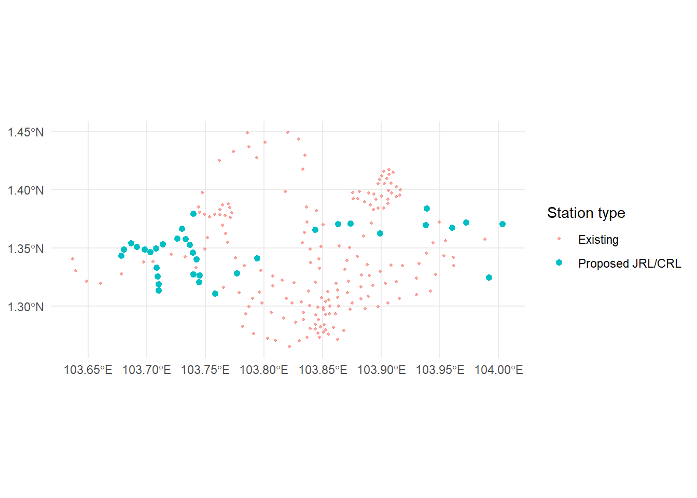
5.4 Passenger Volume Preparation
The October 2026 passenger-volume CSV contains hourly records for weekdays and weekends/holidays. Weekday boarding totals are aggregated to the physical-station level using the reconciled PT_CODE mapping. The station-to-station OD dataset is prepared separately because its origins and destinations are train stations, not HDB residential origins. Differences between total boardings and total OD trips are retained as a quality check, not forced to equality.
volume_by_day <- train_clean %>%
group_by(year_month, day_type) %>%
summarise(
tap_in = sum(total_tap_in_volume, na.rm = TRUE),
tap_out = sum(total_tap_out_volume, na.rm = TRUE),
.groups = "drop"
)
kable(volume_by_day)| year_month | day_type | tap_in | tap_out |
|---|---|---|---|
| 2026-10 | WEEKDAY | 68808352 | 68586662 |
| 2026-10 | WEEKENDS/HOLIDAY | 22700220 | 22634938 |
pt_lookup <- pt_code_map %>% select(pt_code, station_name)
station_ridership <- train_clean %>%
filter(year_month == "2026-10", day_type == "WEEKDAY") %>%
group_by(pt_code) %>%
summarise(
observed_boardings = sum(total_tap_in_volume, na.rm = TRUE),
observed_alightings = sum(total_tap_out_volume, na.rm = TRUE),
.groups = "drop"
) %>%
left_join(pt_lookup, by = "pt_code") %>%
group_by(station_name) %>%
summarise(
observed_boardings = sum(observed_boardings),
observed_alightings = sum(observed_alightings),
.groups = "drop"
)
existing_station_sf <- existing_station_sf %>%
left_join(station_ridership, by = "station_name")
kable(
station_ridership %>% arrange(desc(observed_boardings)) %>% slice_head(n = 10),
caption = "Top ten stations by October 2026 weekday boardings"
)| station_name | observed_boardings | observed_alightings |
|---|---|---|
| Jurong East | 1567767 | 1606011 |
| Raffles Place | 1467823 | 1447397 |
| Orchard | 1320862 | 1403168 |
| Serangoon | 1281747 | 1323497 |
| Newton | 1253172 | 1305478 |
| Woodlands | 1247378 | 1505190 |
| Tampines | 1215942 | 1258247 |
| Bugis | 1182833 | 1218370 |
| Yishun | 1160177 | 1269437 |
| Clementi | 1085972 | 1137323 |
# Aggregate the large OD file by station-code pair BEFORE joining.
od_weekday <- od_clean %>%
filter(year_month == "2026-10", day_type == "WEEKDAY") %>%
group_by(origin_pt_code, destination_pt_code) %>%
summarise(observed_trips = sum(total_trips, na.rm = TRUE), .groups = "drop") %>%
left_join(pt_lookup %>% rename(origin_station = station_name),
by = c("origin_pt_code" = "pt_code")) %>%
left_join(pt_lookup %>% rename(destination_station = station_name),
by = c("destination_pt_code" = "pt_code"))
od_by_physical_station <- od_weekday %>%
group_by(origin_station, destination_station) %>%
summarise(observed_trips = sum(observed_trips), .groups = "drop")
ridership_comparison <- tibble(
metric = c("Weekday station tap-ins", "Weekday station-to-station OD trips"),
monthly_total = c(sum(station_ridership$observed_boardings),
sum(od_by_physical_station$observed_trips))
)
kable(ridership_comparison)| metric | monthly_total |
|---|---|
| Weekday station tap-ins | 68808352 |
| Weekday station-to-station OD trips | 67946944 |
5.5 Residential Market Potential
HDB polygons are represented by interior points and allocated to a regular 1 km grid. HDB building count provides a preliminary relative origin-demand proxy, not observed population or total rail-trip generation. This proxy excludes private-housing demand and will require scaling/validation before interpreting model outputs as passenger counts.
hdb_points_sf <- hdb_3414 %>%
mutate(building_id = row_number()) %>%
st_point_on_surface()
origin_grid_geom <- st_make_grid(hdb_points_sf, cellsize = 1000, square = TRUE)
origin_grid_sf <- st_sf(
origin_id = sprintf("G%04d", seq_along(origin_grid_geom)),
geometry = origin_grid_geom
)
hdb_grid_assignment <- st_join(
hdb_points_sf %>% select(building_id),
origin_grid_sf %>% select(origin_id),
join = st_within,
left = TRUE
)
origin_counts <- hdb_grid_assignment %>%
st_drop_geometry() %>%
filter(!is.na(origin_id)) %>%
count(origin_id, name = "hdb_building_count")
origin_grid_sf <- origin_grid_sf %>%
left_join(origin_counts, by = "origin_id") %>%
mutate(hdb_building_count = replace_na(hdb_building_count, 0L)) %>%
filter(hdb_building_count > 0)
origin_sf <- origin_grid_sf %>%
st_centroid() %>%
mutate(market_potential = as.numeric(hdb_building_count))5.6 Quality Assessment
The final assessment summarises observation coverage, station-code reconciliation, geometry validity and residential-origin coverage. Differences between October passenger totals and station-to-station OD trip totals are documented rather than forced to equality. The processing pipeline retains the source data unchanged and creates cleaned in-memory analysis objects.
qa_summary <- tibble(
Check = c(
"Coordinate reference system: station points",
"Distinct LTA PT_CODEs",
"Physical operational stations",
"New planned JRL/CRL stations (assumption)",
"PT_CODEs with zero/multiple matched names",
"PT_CODEs with partially missing component codes",
"Current stations lacking observed weekday boardings",
"Invalid HDB geometries after transformation",
"HDB buildings unassigned to grid",
"Residential origin grids",
"Current station names unmatched to Master Plan"
),
Result = c(
as.character(st_crs(existing_station_sf)$epsg),
as.character(n_distinct(train_clean$pt_code)),
as.character(nrow(existing_station_sf)),
as.character(nrow(future_station_sf)),
as.character(nrow(problem_pt_codes)),
as.character(nrow(partial_code_gaps)),
as.character(sum(is.na(existing_station_sf$observed_boardings))),
as.character(sum(!st_is_valid(hdb_3414))),
as.character(sum(is.na(hdb_grid_assignment$origin_id))),
as.character(nrow(origin_sf)),
as.character(nrow(masterplan_unmatched))
)
)
kable(qa_summary)| Check | Result |
|---|---|
| Coordinate reference system: station points | 3414 |
| Distinct LTA PT_CODEs | 185 |
| Physical operational stations | 184 |
| New planned JRL/CRL stations (assumption) | 35 |
| PT_CODEs with zero/multiple matched names | 0 |
| PT_CODEs with partially missing component codes | 2 |
| Current stations lacking observed weekday boardings | 0 |
| Invalid HDB geometries after transformation | 0 |
| HDB buildings unassigned to grid | 2 |
| Residential origin grids | 243 |
| Current station names unmatched to Master Plan | 3 |
6 Exploratory Analysis of Station Ridership and Spatial Determinants
This section is to examine how observed October 2026 weekday MRT/LRT station boardings are associated with nearby residential buildings, a preliminary indicator of rail connectivity, and the spatial spacing of existing stations. Global OLS is used as a benchmark before geographically weighted regression (GWR) is considered. The analyses describe associations rather than causal effects; the available explanatory variables do not capture employment, commercial activity, private housing, or passenger trip purpose.
6.1 Analytical Approach and Variable Selection
The unit of analysis is the physical operating rail station, consistent with the station-code reconciliation in Section 5. Observed boardings are the sum of weekday tap-ins across October 2026, not average daily boardings. To reduce the influence of large hubs on linear regression, the dependent variable is transformed as \(\log(1+\mathrm{boardings})\).
The initial analysis uses three explanatory variables:
log_hdb_800m: log-transformed number of HDB building points within an 800 m straight-line buffer of each existing station. The buffer is a proximity proxy rather than a walkable network catchment; buffers may overlap.n_active_codes: number of operational rail station codes associated with a consolidated physical station; a limited connectivity proxy, not a comprehensive measure of network centrality.nearest_station_km: distance in kilometres to the nearest other existing physical station. This describes station spacing and may reflect competing station availability but does not itself measure station substitution.
Employment activity, commercial POIs and bus connectivity are not included in this initial specification because comparable station-level measures have not yet been prepared. The GWR analysis should be treated as exploratory until its diagnostics support interpretation.
6.2 Station-Level Explanatory Variables
nearby_hdb <- st_is_within_distance(
existing_station_sf, hdb_points_sf, dist = 800
)
hdb_800m <- lengths(nearby_hdb)
# Pairwise station distances, converted explicitly from metres to numeric.
station_dist_m <- matrix(
as.numeric(st_distance(existing_station_sf)),
nrow = nrow(existing_station_sf)
)
diag(station_dist_m) <- Inf # Exclude each station itself.
nearest_station_km <- apply(station_dist_m, 1, min) / 1000
station_reg_sf <- existing_station_sf %>%
mutate(
hdb_800m = hdb_800m,
log_hdb_800m = log1p(hdb_800m),
nearest_station_km = nearest_station_km,
log_boardings = log1p(observed_boardings)
)
station_var_summary <- station_reg_sf %>%
st_drop_geometry() %>%
summarise(
stations = n(),
total_monthly_weekday_boardings = sum(observed_boardings),
median_hdb_800m = median(hdb_800m),
median_nearest_station_km = median(nearest_station_km),
max_n_active_codes = max(n_active_codes)
)
kable(station_var_summary, digits = 2)| stations | total_monthly_weekday_boardings | median_hdb_800m | median_nearest_station_km | max_n_active_codes |
|---|---|---|---|---|
| 184 | 68808352 | 76 | 0.81 | 3 |
NoteInterpretation note
HDB counts are not mutually exclusive across station buffers, so their sum cannot be interpreted as the total number of unique HDB buildings. A station with few nearby HDB buildings may still attract substantial ridership due to employment, retail or interchange functions.
6.3 Exploratory Spatial Data Analysis
ggplot(station_reg_sf) +
geom_sf(aes(colour = log_boardings), size = 1.8, alpha = 0.85) +
scale_colour_viridis_c(name = "log(1 + boardings)") +
coord_sf(datum = NA) +
labs(title = "Existing-station boarding distribution", x = NULL, y = NULL) +
theme_minimal()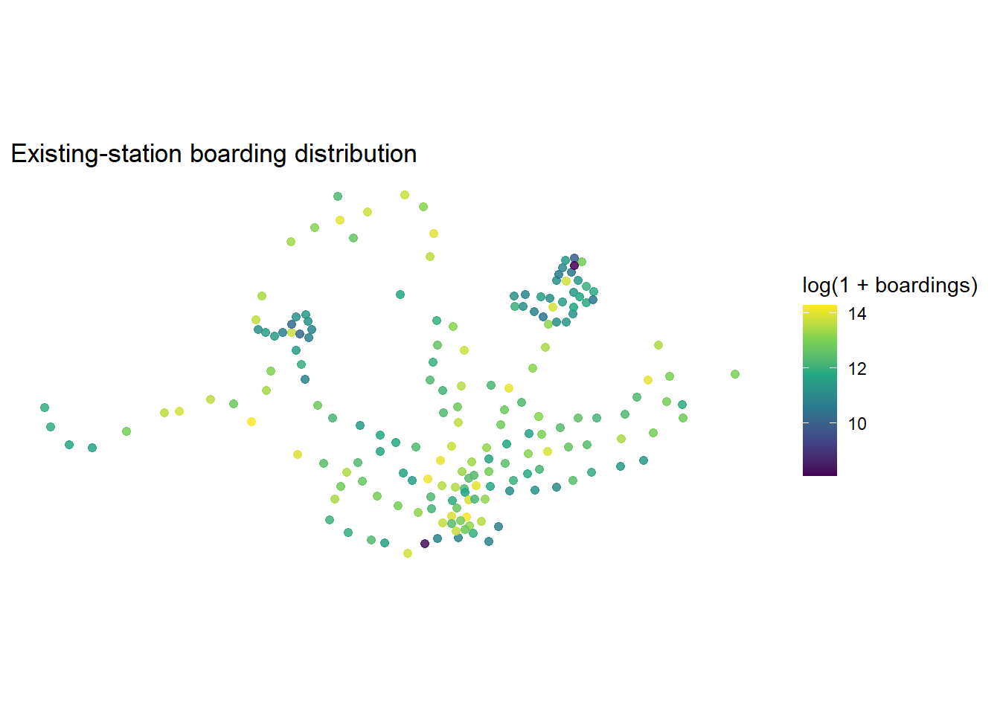
ggplot(st_drop_geometry(station_reg_sf),
aes(x = observed_boardings / 1e6)) +
geom_histogram(bins = 25) +
labs(x = "October weekday boardings (millions)",
y = "Number of stations") +
theme_minimal()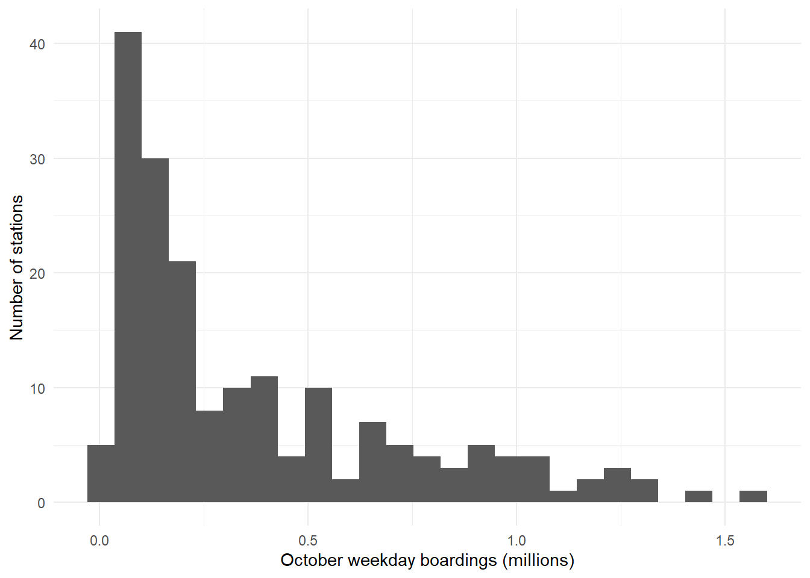
ggplot(st_drop_geometry(station_reg_sf),
aes(x = log_hdb_800m, y = log_boardings)) +
geom_point(alpha = 0.7) +
geom_smooth(method = "lm", se = TRUE, colour = "steelblue") +
labs(x = "log(1 + HDB buildings within 800 m)",
y = "log(1 + October weekday boardings)") +
theme_minimal()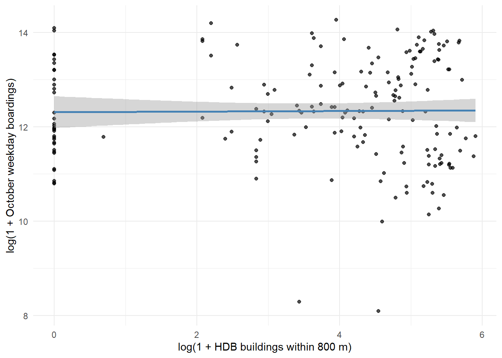
station_cor <- station_reg_sf %>%
st_drop_geometry() %>%
select(log_boardings, log_hdb_800m,
n_active_codes, nearest_station_km) %>%
cor(use = "complete.obs")
kable(round(station_cor, 3), caption = "Pearson correlation matrix")| log_boardings | log_hdb_800m | n_active_codes | nearest_station_km | |
|---|---|---|---|---|
| log_boardings | 1.000 | 0.011 | 0.439 | 0.314 |
| log_hdb_800m | 0.011 | 1.000 | -0.103 | -0.227 |
| n_active_codes | 0.439 | -0.103 | 1.000 | -0.098 |
| nearest_station_km | 0.314 | -0.227 | -0.098 | 1.000 |
6.3.1 Preliminary Findings and Interpretation
The exploratory analysis reveals an uneven distribution of observed station boardings, with most stations recording relatively low volumes and a smaller number experiencing substantially higher demand.
Residential concentration within 800 m shows almost no linear correlation with observed boardings (r = 0.011), suggesting that nearby HDB buildings alone are insufficient to explain station-level ridership differences.
In contrast, station connectivity (r = 0.439) and distance to the nearest neighbouring station (r = 0.314) exhibit positive correlations with ridership. These patterns suggest that network characteristics may contribute to differences in station demand.
However, these are preliminary bivariate associations and do not establish causal relationships. The subsequent OLS and GWR analyses will examine their explanatory relationships and assess whether these vary spatially.
6.4 Global Regression (OLS)
The exploratory findings suggest that station connectivity and station spacing exhibit stronger bivariate associations with observed ridership than nearby HDB concentration. A global Ordinary Least Squares (OLS) model is therefore fitted to examine their relationships with ridership simultaneously, while controlling for the other included predictors.
The OLS model serves as a global benchmark for the subsequent investigation of spatially varying relationships using GWR.
The initial global model is:
\[ \log(1+Y_j)=\beta_0+\beta_1\log(1+HDB_{800m,j})+\beta_2 C_j+\beta_3 D_j+\varepsilon_j \]
where \(Y_j\) denotes October weekday station boardings, \(C_j\) is the number of active rail station codes, and \(D_j\) is the distance to the nearest other station in kilometres.
gwr_formula <- log_boardings ~
log_hdb_800m +
n_active_codes +
nearest_station_km
regression_df <- st_drop_geometry(station_reg_sf)
ols_fit <- lm(
gwr_formula,
data = regression_df
)
ols_summary <- summary(ols_fit)
# Coefficient table
ols_coef <- as.data.frame(ols_summary$coefficients)
kable(
ols_coef,
digits = 4,
caption = "OLS regression coefficients"
)| Estimate | Std. Error | t value | Pr(>|t|) | |
|---|---|---|---|---|
| (Intercept) | 9.5675 | 0.3159 | 30.2892 | 0.0000 |
| log_hdb_800m | 0.0853 | 0.0352 | 2.4266 | 0.0162 |
| n_active_codes | 1.3608 | 0.1688 | 8.0610 | 0.0000 |
| nearest_station_km | 1.0127 | 0.1597 | 6.3407 | 0.0000 |
# Model performance
ols_performance <- tibble(
Observations = nobs(ols_fit),
R_squared = ols_summary$r.squared,
Adjusted_R2 = ols_summary$adj.r.squared,
RMSE_log = sqrt(mean(residuals(ols_fit)^2)),
AIC = AIC(ols_fit)
)
kable(
ols_performance,
digits = 3,
caption = "Global OLS model performance"
)| Observations | R_squared | Adjusted_R2 | RMSE_log | AIC |
|---|---|---|---|---|
| 184 | 0.343 | 0.332 | 0.889 | 488.87 |
predictor_names <- attr(terms(ols_fit), "term.labels")
vif_tbl <- map_dfr(predictor_names, function(pred) {
other_preds <- setdiff(predictor_names, pred)
r2 <- summary(lm(
reformulate(other_preds, response = pred),
data = regression_df
))$r.squared
tibble(variable = pred, VIF = 1 / (1 - r2))
})
kable(vif_tbl, digits = 2, caption = "Global predictor VIF values")| variable | VIF |
|---|---|
| log_hdb_800m | 1.07 |
| n_active_codes | 1.03 |
| nearest_station_km | 1.07 |
station_reg_sf$ols_residual <- residuals(ols_fit)
ggplot(station_reg_sf) +
geom_sf(aes(colour = ols_residual), size = 1.8) +
scale_colour_gradient2(midpoint = 0, name = "OLS residual") +
coord_sf(datum = NA) +
theme_minimal()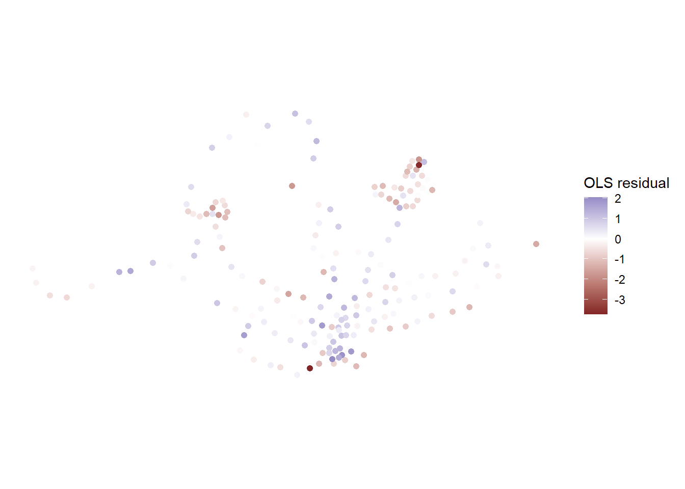
station_reg_sf$cooks_d <- cooks.distance(ols_fit)
station_reg_sf %>%
st_drop_geometry() %>%
arrange(desc(cooks_d)) %>%
select(
station_name,
observed_boardings,
hdb_800m,
n_active_codes,
cooks_d
) %>%
head(10) %>%
kable(
digits = 3,
caption = "Top 10 potentially influential stations"
)| station_name | observed_boardings | hdb_800m | n_active_codes | cooks_d |
|---|---|---|---|---|
| Changi Airport | 442671 | 0 | 1 | 0.202 |
| Springleaf | 129429 | 0 | 1 | 0.100 |
| Downtown | 545120 | 0 | 1 | 0.058 |
| Teck Lee | 3261 | 93 | 1 | 0.055 |
| Outram Park | 870368 | 81 | 3 | 0.039 |
| Dhoby Ghaut | 734503 | 8 | 3 | 0.034 |
| Botanic Gardens | 133747 | 0 | 2 | 0.034 |
| Bayfront | 751682 | 0 | 1 | 0.033 |
| Shenton Way | 336951 | 0 | 1 | 0.033 |
| Somerset | 748671 | 0 | 1 | 0.032 |
# Breusch-Pagan test
bp_test <- bptest(ols_fit)
print(bp_test)
studentized Breusch-Pagan test
data: ols_fit
BP = 5.277, df = 3, p-value = 0.1526# HC3 robust standard errors
robust_coef <- coeftest(
ols_fit,
vcov. = vcovHC(
ols_fit,
type = "HC3"
)
)
# Convert coeftest output to a standard matrix
robust_matrix <- unclass(robust_coef)
# Create a clean data frame
robust_table <- data.frame(
Variable = rownames(robust_matrix),
Estimate = robust_matrix[, 1],
Robust_SE = robust_matrix[, 2],
t_value = robust_matrix[, 3],
p_value = robust_matrix[, 4],
row.names = NULL
)
# Display table
kable(
robust_table,
digits = 4,
caption = "OLS coefficients with HC3 robust standard errors"
)| Variable | Estimate | Robust_SE | t_value | p_value |
|---|---|---|---|---|
| (Intercept) | 9.5675 | 0.3524 | 27.1480 | 0.0000 |
| log_hdb_800m | 0.0853 | 0.0370 | 2.3042 | 0.0224 |
| n_active_codes | 1.3608 | 0.1550 | 8.7773 | 0.0000 |
| nearest_station_km | 1.0127 | 0.2115 | 4.7888 | 0.0000 |
# Identify the two most influential observations
top2_idx <- order(
cooks.distance(ols_fit),
decreasing = TRUE
)[1:2]
# Refit OLS without those observations
ols_sensitivity <- lm(
gwr_formula,
data = regression_df[-top2_idx, , drop = FALSE]
)
# Compare coefficients
coef_comparison <- data.frame(
Variable = names(coef(ols_fit)),
Full_Model = unname(coef(ols_fit)),
Excluding_Top2 = unname(coef(ols_sensitivity))
)
kable(
coef_comparison,
digits = 4,
caption = "Sensitivity of OLS coefficients to influential observations"
)| Variable | Full_Model | Excluding_Top2 |
|---|---|---|
| (Intercept) | 9.5675 | 9.4013 |
| log_hdb_800m | 0.0853 | 0.0759 |
| n_active_codes | 1.3608 | 1.3592 |
| nearest_station_km | 1.0127 | 1.2746 |
6.4.1 Global Model Evaluation and Robustness Assessment
Model Performance
The global OLS model explains 34.3% of the variation in log-transformed station boardings (Adjusted R² = 0.332), indicating moderate but limited explanatory power. All three predictors exhibit statistically significant positive associations with ridership under conventional OLS inference (p < 0.05).
Notably, residential concentration shows a significant positive conditional association (β = 0.0853, p = 0.0162), despite its negligible bivariate correlation with ridership (r = 0.011). This suggests that the relationship becomes more apparent after controlling for station connectivity and spacing.
Model Diagnostics and Robustness
The VIF values (1.03–1.07) indicate no substantial global multicollinearity. The Breusch–Pagan test (BP = 5.277, p = 0.1526) provides no statistically significant evidence of heteroskedasticity. Furthermore, all three predictors remain significant at the 5% level under HC3 robust standard errors.
The influence sensitivity analysis shows that coefficient directions remain unchanged after excluding the two most influential observations, Changi Airport and Springleaf. Station connectivity remains highly stable, while the residential concentration coefficient decreases by approximately 11%. However, the nearest-station distance coefficient increases by approximately 25.9%, indicating some sensitivity to influential observations.
Limitations and Implications
Despite the statistical significance of the predictors, the moderate model fit suggests that other determinants of ridership remain unaccounted for, potentially including employment concentration, commercial activity, and specialised transport functions.
Overall, the OLS model provides a useful global benchmark, although coefficient sensitivity and potentially omitted spatial factors warrant further investigation. The subsequent analysis examines residual spatial autocorrelation and evaluates whether GWR provides additional explanatory insights.
6.5 Spatial Autocorrelation of OLS Residuals
6.5.1 Constructing Spatial Weights
Spatial Weights Construction
A symmetric K-nearest-neighbour (KNN) spatial weights structure is constructed using the projected coordinates of the 184 existing MRT/LRT stations. A baseline of five nearest neighbours is adopted to capture local spatial relationships while accommodating differences in station density.
The neighbour relationships are symmetrised and row-standardised. Alternative neighbourhood sizes are subsequently examined to assess the sensitivity of the spatial autocorrelation results.
# Extract station coordinates
station_xy <- st_coordinates(station_reg_sf)
# Extract OLS residuals
ols_resid <- as.numeric(residuals(ols_fit))
# Construct symmetric 5-nearest-neighbour relationships
station_knn <- knearneigh(
station_xy,
k = 5,
longlat = FALSE
)
station_nb <- knn2nb(
station_knn,
sym = TRUE
)
# Row-standardised spatial weights
station_lw <- nb2listw(
station_nb,
style = "W"
)6.5.2 Global Moran’s I Test
The regression-residual test is the primary inference; the permutation comparison is supplementary because it does not fully reproduce the regression-specific residual null distribution.
# Moran's I test specifically for OLS residuals
ols_moran <- lm.morantest(
ols_fit,
station_lw,
alternative = "two.sided"
)
# Additional permutation-based diagnostic
set.seed(1234)
ols_moran_perm <- moran.mc(
ols_resid,
station_lw,
nsim = 999,
alternative = "two.sided"
)6.5.3 Spatial Weights Sensitivity Analysis
k_values <- c(4, 5, 6, 8)
moran_sensitivity <- map_dfr(
k_values,
function(k) {
# Construct spatial neighbours
nb_k <- knn2nb(
knearneigh(
station_xy,
k = k,
longlat = FALSE
),
sym = TRUE
)
# Row-standardised weights
lw_k <- nb2listw(
nb_k,
style = "W"
)
# Moran's I for OLS residuals
test_k <- lm.morantest(
ols_fit,
lw_k,
alternative = "two.sided"
)
tibble(
K = k,
Moran_I = unname(
test_k$estimate["Observed Moran I"]
),
P_value = test_k$p.value
)
}
)
kable(
moran_sensitivity %>%
mutate(P_value = format.pval(P_value, digits = 3, eps = 0.001)),
digits = 4,
caption = "Sensitivity of OLS residual Moran's I to KNN specification"
)| K | Moran_I | P_value |
|---|---|---|
| 4 | 0.2071 | <0.001 |
| 5 | 0.1790 | <0.001 |
| 6 | 0.1715 | <0.001 |
| 8 | 0.1560 | <0.001 |
6.5.4 Moran Scatter Plot
# Standardise OLS residuals
resid_z <- as.numeric(scale(ols_resid))
# Calculate spatial lag
lag_resid_z <- lag.listw(
station_lw,
resid_z
)
moran_df <- tibble(
residual_z = resid_z,
lag_residual_z = lag_resid_z
)
ggplot(
moran_df,
aes(x = residual_z, y = lag_residual_z)
) +
geom_point(alpha = 0.7) +
geom_smooth(
method = "lm",
se = FALSE,
colour = "steelblue"
) +
geom_hline(
yintercept = 0,
linetype = "dashed"
) +
geom_vline(
xintercept = 0,
linetype = "dashed"
) +
labs(
title = "Moran Scatter Plot of OLS Residuals",
x = "Standardised OLS Residual",
y = "Spatial Lag of Standardised Residual"
) +
theme_minimal()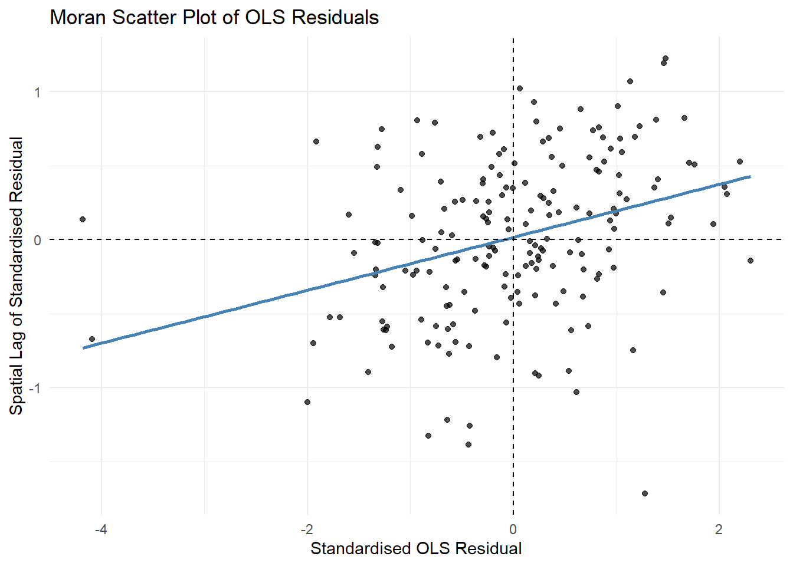
simulated_I <- head(ols_moran_perm$res, -1)
observed_I <- tail(ols_moran_perm$res, 1)
n_sim <- length(simulated_I)
p_upper <- (1 + sum(simulated_I >= observed_I)) /
(n_sim + 1)
p_lower <- (1 + sum(simulated_I <= observed_I)) /
(n_sim + 1)
p_two_sided <- min(1, 2 * min(p_upper, p_lower))moran_results <- tibble(
Test = c(
"Regression residual Moran's I",
"Monte Carlo permutation (999)"
),
Moran_I = c(
unname(ols_moran$estimate["Observed Moran I"]),
as.numeric(ols_moran_perm$statistic)
),
P_value = c(
ols_moran$p.value,
p_two_sided
)
)
kable(
moran_results %>%
mutate(P_value = format.pval(P_value, digits = 3, eps = 0.001)),
digits = 4,
caption = "Global Moran's I tests of OLS residuals"
)| Test | Moran_I | P_value |
|---|---|---|
| Regression residual Moran’s I | 0.179 | <0.001 |
| Monte Carlo permutation (999) | 0.179 | 0.002 |
6.5.5 Evaluation of Residual Spatial Autocorrelation
Significant Spatial Dependence
Global Moran’s I reveals statistically significant positive spatial autocorrelation in the OLS residuals (I = 0.1790, z = 4.6652, p < 0.001). This indicates that stations with similar prediction errors tend to be geographically clustered, suggesting that the global OLS model has not fully captured spatially structured variation in ridership.
The finding is further supported by a Monte Carlo permutation test with 999 simulations (two-sided empirical p = 0.002), providing additional evidence of non-random spatial patterns in the residuals.
Robustness to Spatial Weight Specifications
Sensitivity analysis using K = 4, 5, 6, and 8 consistently produces positive and statistically significant Moran’s I values (0.1560–0.2071, all p < 0.001).
Although the magnitude of Moran’s I decreases as the number of neighbours increases, the overall conclusion remains robust across the tested spatial weight specifications. This suggests that residual spatial association is relatively stronger among nearby stations.
Spatial Pattern Interpretation
The Moran scatter plot further illustrates the positive relationship between standardised OLS residuals and their spatially lagged values. Stations with positive residuals tend to be surrounded by stations with similarly positive residuals, while negative residuals also exhibit spatial similarity.
These patterns suggest potential geographical concentrations of model underestimation and overestimation. However, the global analysis does not establish the statistical significance of individual local clusters.
Implications for Further Modelling
The significant residual spatial autocorrelation highlights limitations in the global OLS specification, potentially arising from omitted spatially structured factors, spatial dependence, or geographically varying relationships.
These findings provide a rationale for investigating spatial heterogeneity through Geographically Weighted Regression (GWR). However, significant spatial autocorrelation alone does not establish that GWR is preferable to OLS.
The subsequent GWR analysis will therefore evaluate whether allowing regression coefficients to vary geographically improves model fit and reduces residual spatial autocorrelation, while assessing the stability and interpretability of local estimates.
6.6 Geographically Weighted Regression (GWR)
6.6.1 Model Specification and Bandwidth Selection
Geographically Weighted Regression (GWR) is employed to investigate whether the relationships between station ridership and its explanatory variables vary across Singapore.
The model retains the same dependent variable and predictors as the global OLS model, allowing direct comparison between global and local regression specifications.
An adaptive Gaussian kernel is adopted to accommodate the uneven spatial distribution of MRT/LRT stations. The optimal bandwidth is selected using the corrected Akaike Information Criterion (AICc), balancing model fit and complexity.
# Use the same variables as OLS
bw_gwr <- bw.gwr(
formula = gwr_formula,
data = station_reg_sf,
approach = "AICc",
kernel = "gaussian",
adaptive = TRUE,
longlat = FALSE
)Adaptive bandwidth (number of nearest neighbours): 121 AICc value: 481.6464
Adaptive bandwidth (number of nearest neighbours): 83 AICc value: 473.9123
Adaptive bandwidth (number of nearest neighbours): 58 AICc value: 469.1328
Adaptive bandwidth (number of nearest neighbours): 44 AICc value: 465.289
Adaptive bandwidth (number of nearest neighbours): 34 AICc value: 460.8386
Adaptive bandwidth (number of nearest neighbours): 29 AICc value: 456.7045
Adaptive bandwidth (number of nearest neighbours): 24 AICc value: 456.2236
Adaptive bandwidth (number of nearest neighbours): 23 AICc value: 456.3289
Adaptive bandwidth (number of nearest neighbours): 26 AICc value: 456.6052
Adaptive bandwidth (number of nearest neighbours): 23 AICc value: 456.3289
Adaptive bandwidth (number of nearest neighbours): 24 AICc value: 456.2236 cat("Selected adaptive bandwidth (nearest neighbours):", bw_gwr, "\n")Selected adaptive bandwidth (nearest neighbours): 24 6.6.2 GWR Model Estimation
gwr_fit <- gwr.basic(
formula = gwr_formula,
data = station_reg_sf,
bw = bw_gwr,
kernel = "gaussian",
adaptive = TRUE,
longlat = FALSE
)6.6.3 Comparing OLS and GWR
n <- nobs(ols_fit)
# OLS AICc
k <- attr(logLik(ols_fit), "df")
ols_aicc <- AIC(ols_fit) +
(2 * k * (k + 1)) / (n - k - 1)
# GWR diagnostics
gwr_diag <- gwr_fit$GW.diagnostic
# GWR residuals
gwr_result_sf <- st_as_sf(gwr_fit$SDF)
# Compare model performance
model_comparison <- tibble(
Model = c("OLS", "GWR"),
AICc = c(
ols_aicc,
gwr_diag$AICc
),
Adjusted_R2 = c(
summary(ols_fit)$adj.r.squared,
gwr_diag$gwR2.adj
),
RMSE_log = c(
sqrt(mean(residuals(ols_fit)^2)),
sqrt(mean(gwr_result_sf$residual^2))
)
)
kable(
model_comparison,
digits = 3,
caption = "Global OLS versus GWR model comparison"
)| Model | AICc | Adjusted_R2 | RMSE_log |
|---|---|---|---|
| OLS | 489.207 | 0.332 | 0.889 |
| GWR | 456.224 | 0.469 | 0.746 |
6.6.4 Mapping Local Relationships
Local coefficients are summarised before mapping to distinguish variation in estimated associations from statistically significant local effects. The maps below display selected patterns; they do not establish local causal relationships.
local_coef_summary <- tibble(
Predictor = c("Residential concentration", "Station connectivity", "Station spacing"),
Minimum = c(min(gwr_result_sf$log_hdb_800m), min(gwr_result_sf$n_active_codes),
min(gwr_result_sf$nearest_station_km)),
Median = c(median(gwr_result_sf$log_hdb_800m), median(gwr_result_sf$n_active_codes),
median(gwr_result_sf$nearest_station_km)),
Maximum = c(max(gwr_result_sf$log_hdb_800m), max(gwr_result_sf$n_active_codes),
max(gwr_result_sf$nearest_station_km))
)
kable(local_coef_summary, digits = 3,
caption = "Range of local GWR coefficient estimates")| Predictor | Minimum | Median | Maximum |
|---|---|---|---|
| Residential concentration | -0.009 | 0.111 | 0.635 |
| Station connectivity | 0.852 | 1.287 | 2.224 |
| Station spacing | -0.910 | 0.924 | 2.456 |
ggplot(gwr_result_sf) +
geom_sf(
aes(colour = Local_R2),
size = 2
) +
scale_colour_viridis_c(
name = "Local R²"
) +
coord_sf(datum = NA) +
labs(
title = "Spatial Distribution of GWR Local R²"
) +
theme_minimal()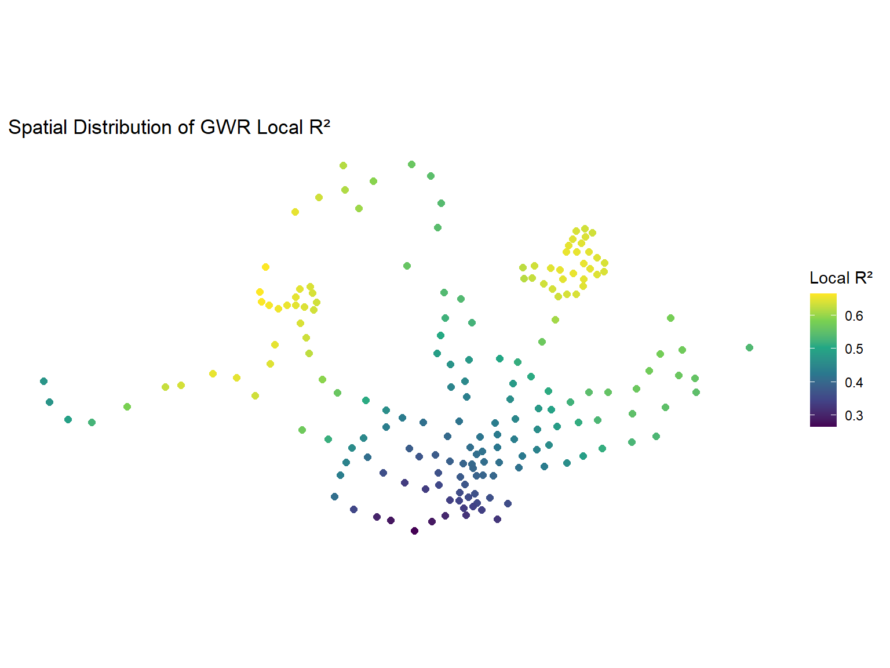
ggplot(gwr_result_sf) +
geom_sf(
aes(colour = log_hdb_800m),
size = 2
) +
scale_colour_gradient2(
midpoint = 0,
name = "Local HDB Coefficient"
) +
coord_sf(datum = NA) +
labs(
title = "Spatial Variation in HDB–Ridership Relationship"
) +
theme_minimal()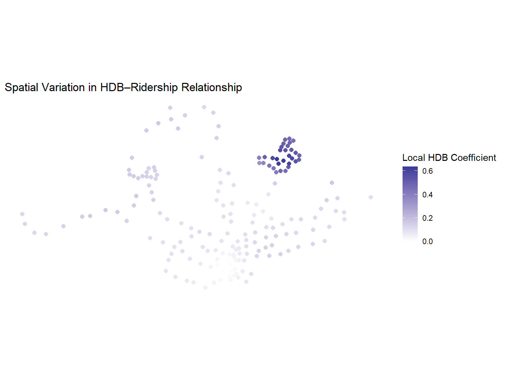
6.6.5 Local Collinearity and Residual Diagnostics
local_collin <- gwr.collin.diagno(
formula = gwr_formula,
data = station_reg_sf,
bw = bw_gwr,
kernel = "gaussian",
adaptive = TRUE,
longlat = FALSE
)
collin_sf <- st_as_sf(local_collin$SDF)
local_cn_summary <- tibble(
Minimum = min(collin_sf$local_CN, na.rm = TRUE),
Median = median(collin_sf$local_CN, na.rm = TRUE),
Mean = mean(collin_sf$local_CN, na.rm = TRUE),
Maximum = max(collin_sf$local_CN, na.rm = TRUE),
Stations_CN_over_30 = sum(collin_sf$local_CN > 30, na.rm = TRUE)
)
kable(local_cn_summary, digits = 2,
caption = "GWR local condition number diagnostics")| Minimum | Median | Mean | Maximum | Stations_CN_over_30 |
|---|---|---|---|---|
| 8.61 | 11.72 | 15.21 | 41.25 | 21 |
gwr_resid <- as.numeric(gwr_result_sf$residual)
# Calculate Moran's I using the same spatial weights
gwr_moran <- moran.test(
gwr_resid,
station_lw,
alternative = "two.sided"
)
print(gwr_moran)
Moran I test under randomisation
data: gwr_resid
weights: station_lw
Moran I statistic standard deviate = -0.35923, p-value = 0.7194
alternative hypothesis: two.sided
sample estimates:
Moran I statistic Expectation Variance
-0.020226999 -0.005464481 0.001688746 # Descriptive comparison
moran_comparison <- tibble(
Model = c("OLS", "GWR"),
Residual_Moran_I = c(
unname(ols_moran$estimate["Observed Moran I"]),
unname(gwr_moran$estimate[1])
)
)
kable(
moran_comparison,
digits = 4,
caption = "Comparison of residual spatial autocorrelation"
)| Model | Residual_Moran_I |
|---|---|
| OLS | 0.1790 |
| GWR | -0.0202 |
6.6.6 Evaluation and Implications
Model Performance and Improvement
The GWR model demonstrates substantially better in-sample fit than the global OLS model. AICc decreases from 489.207 to 456.224 (ΔAICc = 32.983), while Adjusted R² increases from 0.332 to 0.469. RMSE decreases from 0.889 to 0.746, representing a 16.1% reduction on the log-transformed scale.
The AICc-optimised adaptive Gaussian bandwidth of 24 nearest neighbours supports the use of relatively localised relationships. However, GWR has greater effective model complexity (ENP = 23.54), and improved in-sample performance does not necessarily indicate superior out-of-sample predictive accuracy.
Spatial Heterogeneity in Ridership Relationships
GWR reveals geographical variation in the relationships between station ridership and its explanatory variables.
Residential concentration: Local HDB coefficients range from −0.009 to 0.635, with stronger positive associations in parts of northeastern Singapore.
Station connectivity: Coefficients remain positive across all stations (0.852–2.224), although their magnitudes vary geographically.
Station spacing: Coefficients range from −0.910 to 2.456, indicating potentially different relationships across locations.
The Local R-square map also demonstrates uneven explanatory performance, with relatively higher values in northern and northeastern areas and lower values around south-central Singapore.
These patterns are consistent with spatially varying relationships, although local coefficient differences do not necessarily imply statistical significance.
Residual Spatial Autocorrelation
GWR substantially reduces the positive spatial autocorrelation observed in the OLS residuals.
Using the same K = 5 spatial weights, residual Moran’s I decreases from 0.1790 under OLS to −0.0202 under GWR. The GWR residual diagnostic does not indicate statistically significant spatial autocorrelation (p = 0.7194).
This suggests that GWR captures a substantial portion of the spatial structure remaining in the global model’s residuals. However, the GWR Moran’s I test is interpreted as a diagnostic because conventional significance testing does not fully account for the local model-fitting process.
Local Multicollinearity and Model Reliability
Despite low global VIF values, local collinearity diagnostics reveal potential estimation instability. The median Local Condition Number is 11.72, with 21 of 184 stations (11.4%) exceeding the commonly used threshold of 30.
These findings suggest that some local coefficient estimates may be sensitive to predictor relationships, requiring cautious interpretation.
Overall Assessment and Implications for SIM
Overall, GWR provides stronger in-sample explanatory performance than OLS, reveals geographical variation in ridership relationships, and substantially reduces residual spatial autocorrelation.
Nevertheless, the moderate Adjusted R², local collinearity concerns, and absence of out-of-sample validation indicate that GWR should primarily be interpreted as an exploratory explanatory model rather than a validated forecasting tool.
The findings highlight the potential relevance of residential concentration and network connectivity for the subsequent Spatial Interaction Model (SIM). However, GWR coefficients will not be directly transferred into the SIM. Instead, the analysis provides supporting evidence for considering spatially relevant station-attractiveness indicators, while acknowledging the potential importance of omitted employment and commercial activity variables.
6.7 Findings and Implications for SIM
The analysis reveals three key findings:
Residential concentration has a limited global association with station ridership, but its relationship varies geographically.
Station connectivity and spacing are important correlates of ridership, with their associations differing across locations.
GWR outperforms OLS in terms of in-sample model fit and substantially reduces residual spatial autocorrelation, although local multicollinearity remains a concern.
These findings suggest that station ridership cannot be fully explained by residential concentration alone. Network characteristics and spatial differences should also be considered.
Building on these insights, Section 7 develops a probabilistic Spatial Interaction Model (SIM) using residential market potential, station attractiveness, and spatial separation to estimate station-level demand under the existing and expanded MRT networks.
7 Probabilistic Spatial Interaction Modelling
This section constructs the required origin and destination tables, prepares two origin–station interaction data frames, and calibrates a Huff-type probabilistic station-choice model using observed October 2026 weekday station boardings. The expanded-network data frame is prepared here, the resulting scenario predictions are reserved for following analysis.
NoteInterpretation note
Station-to-station OD records do not identify passengers’ residential origins. Accordingly, calibration here uses aggregated observed station boardings, not observed origin-grid-to-station choice shares. HDB building counts represent relative residential potential rather than measured rail trips. The total observed baseline boardings are used for normalisation, not to assert that all boardings originate from HDB buildings.
7.1 Model Framework and Assumptions
A Huff-type probabilistic spatial interaction model assigns residential-origin demand to competing stations based on station attractiveness and distance:
\[ P_{ij}=\frac{A_j^{\gamma}\,d_{ij}^{-\beta}}{\sum_{k\in J}A_k^{\gamma}\,d_{ik}^{-\beta}}, \qquad \widehat{Y}_j=\sum_i\left(T\frac{M_i}{\sum_hM_h}\right)P_{ij}. \]
Here, \(M_i\) is the HDB-building count in origin grid \(i\), \(A_j\) is the available station-connectivity proxy, \(d_{ij}\) is Euclidean origin-centroid-to-station distance (km), \(\gamma\) is the attraction exponent, \(\beta\) is the distance-decay exponent, and \(T\) is the aggregate observed baseline October weekday boarding total. A 150 m distance floor avoids unrealistically high scores where a grid centroid lies almost exactly on a station. The distance floor is a modelling assumption, not observed walking distance. Origin demand and model parameters are held constant across scenarios.
7.2 Origin and Destination Data Frames
# Origin: one row per occupied 1-km HDB grid.
origin_df <- origin_sf %>%
st_drop_geometry() %>%
transmute(
origin_id = as.character(origin_id),
hdb_building_count = as.numeric(hdb_building_count),
market_potential = as.numeric(market_potential)
)
# Future lines can also add new codes at already-existing interchanges.
# This object was prepared in Section 5.2.
new_codes_existing <- future_interchanges_tbl %>%
distinct(station_name, station_code) %>%
count(station_name, name = "new_station_codes")
existing_dest <- existing_station_sf %>%
st_drop_geometry() %>%
left_join(new_codes_existing, by = "station_name") %>%
mutate(
new_station_codes = replace_na(new_station_codes, 0L),
attraction_baseline = pmax(1, as.numeric(n_active_codes)),
attraction_future = attraction_baseline + new_station_codes
) %>%
transmute(
destination_id = as.character(station_name),
station_type = "Existing",
observed_boardings = as.numeric(observed_boardings),
attraction_baseline,
attraction_future
)
proposed_dest <- future_station_sf %>%
st_drop_geometry() %>%
transmute(
destination_id = as.character(station_name),
station_type = "Proposed",
observed_boardings = NA_real_,
attraction_baseline = NA_real_,
attraction_future = pmax(1, as.numeric(n_proposed_codes))
)
destination_df <- bind_rows(existing_dest, proposed_dest)
destination_baseline <- filter(destination_df, station_type == "Existing")
kable(
tibble(
Table = c("Origin market potential", "Existing destinations", "All scenario destinations"),
Rows = c(nrow(origin_df), nrow(destination_baseline), nrow(destination_df))
),
caption = "Prepared origin and destination data frames"
)| Table | Rows |
|---|---|
| Origin market potential | 243 |
| Existing destinations | 184 |
| All scenario destinations | 219 |
NoteVariable rationale
market_potential captures residential-building density rather than actual population or trip generation. attraction_baseline uses the number of currently active station codes as an initial connectivity proxy; for the expanded scenario, the proxy is adjusted for added codes at existing interchanges and provided for new stations. These are simplified, not comprehensive, measures of station attractiveness.
7.3 Spatial Interaction Data Frames
The existing-network interaction frame contains every HDB origin crossed with every operational physical station. The expanded-network frame uses the same origins but includes existing and proposed JRL/CRL stations. Distances use SVY21 / Singapore TM (EPSG:3414).
# Preserve ordering: expand_grid() keeps origins outside and stations inside.
build_interaction_frame <- function(origins, stations, destinations,
attraction_col, minimum_km = 0.15) {
distance_matrix <- st_distance(origins, stations)
# Transpose before flattening so stations vary fastest within each origin.
distance_km <- pmax(as.numeric(t(distance_matrix)) / 1000, minimum_km)
expand_grid(
origin_id = as.character(origins$origin_id),
destination_id = as.character(stations$station_name)
) %>%
mutate(distance_km = distance_km) %>%
left_join(
destinations %>% select(destination_id, station_type,
observed_boardings, all_of(attraction_col)),
by = "destination_id"
) %>%
rename(attraction = all_of(attraction_col)) %>%
select(origin_id, destination_id, station_type,
observed_boardings, attraction, distance_km)
}
# Existing physical stations first; new stations appended afterwards.
expanded_station_sf <- bind_rows(
existing_station_sf %>% select(station_name),
future_station_sf %>% select(station_name)
)
interaction_baseline <- build_interaction_frame(
origin_sf, existing_station_sf,
destination_baseline, "attraction_baseline"
)
interaction_expanded <- build_interaction_frame(
origin_sf, expanded_station_sf,
destination_df, "attraction_future"
)
kable(
tibble(
Scenario = c("Existing", "Expanded JRL + CRL"),
Origins = nrow(origin_df),
Destinations = c(nrow(destination_baseline), nrow(destination_df)),
Interaction_pairs = c(nrow(interaction_baseline), nrow(interaction_expanded))
),
caption = "Two origin–station interaction data frames"
)| Scenario | Origins | Destinations | Interaction_pairs |
|---|---|---|---|
| Existing | 243 | 184 | 44712 |
| Expanded JRL + CRL | 243 | 219 | 53217 |
kable(
head(interaction_baseline, 6), digits = 3,
caption = "Example rows from the baseline interaction frame"
)| origin_id | destination_id | station_type | observed_boardings | attraction | distance_km |
|---|---|---|---|---|---|
| G0014 | Admiralty | Existing | 973039 | 1 | 18.331 |
| G0014 | Aljunied | Existing | 510433 | 1 | 9.663 |
| G0014 | Ang Mo Kio | Existing | 935811 | 1 | 11.555 |
| G0014 | Bakau | Existing | 74091 | 1 | 16.677 |
| G0014 | Bangkit | Existing | 48601 | 1 | 12.218 |
| G0014 | Bartley | Existing | 219828 | 1 | 11.083 |
With the cleaned file counts previously checked, the expected sizes are 243 × 184 = 44,712 existing-network pairs and 243 × 219 = 53,217 expanded-network pairs. They provide a transparent record of the origin–destination choice sets used in the two scenarios.
7.4 Model Calibration
7.4.1 Model Specification and Calibration Objective
A Huff-type probabilistic spatial interaction model is specified to estimate the likelihood of each residential origin selecting an existing MRT/LRT station. Station-choice probabilities depend on station attractiveness and spatial separation.
Since observed residential origin-to-station flows are unavailable, calibration is performed against aggregate observed station boarding shares rather than individual station-choice records.
n_orig <- nrow(origin_df)
n_dest <- nrow(destination_baseline)
attraction_distribution <- destination_baseline %>%
count(attraction_baseline, name = "Stations")
kable(attraction_distribution,
caption = "Distribution of baseline station attractiveness")| attraction_baseline | Stations |
|---|---|
| 1 | 156 |
| 2 | 26 |
| 3 | 2 |
# Convert interaction distances into a matrix
base_dist_mat <- matrix(
interaction_baseline$distance_km,
nrow = n_orig,
ncol = n_dest,
byrow = TRUE
)
# Station attractiveness
station_attr <- as.numeric(
destination_baseline$attraction_baseline
)
# Observed station boardings
observed <- as.numeric(
destination_baseline$observed_boardings
)
# Total observed boardings
total_boardings <- sum(observed)
# Residential market potential
origin_weights <- origin_df$market_potential /
sum(origin_df$market_potential)
# Normalised origin demand
origin_demand <- origin_weights * total_boardings
# Observed station shares
observed_share <- observed / total_boardings# Precalculate logged inputs
log_dist_mat <- log(base_dist_mat)
log_station_attr <- log(station_attr)
allocate_baseline <- function(
gamma,
beta,
return_probabilities = FALSE
) {
# Calculate log attractiveness / distance utility
log_utility <- sweep(
-beta * log_dist_mat,
2,
gamma * log_station_attr,
"+"
)
# Numerical stability adjustment
row_max <- apply(log_utility, 1, max)
exp_u <- exp(
sweep(log_utility, 1, row_max, "-")
)
# Calculate choice probabilities
probabilities <- sweep(
exp_u,
1,
rowSums(exp_u),
"/"
)
# Allocate origin demand to stations
estimates <- colSums(
sweep(probabilities, 1, origin_demand, "*")
)
if (return_probabilities) {
return(list(
probabilities = probabilities,
estimated = estimates
))
}
estimates
}7.4.2 Parameter Calibration
Model parameters are calibrated by minimising the discrepancy between observed and estimated station boarding shares. A Hellinger-type squared discrepancy is used as the optimisation objective.
Bounded optimisation with multiple starting values is applied to assess convergence stability and reduce dependence on initial parameter choices.
aggregate_objective <- function(par) {
gamma <- par[1]
beta <- par[2]
# Calculate modelled station shares
predicted_share <- allocate_baseline(
gamma,
beta
) / total_boardings
# Hellinger-type squared discrepancy
objective <- sum(
(sqrt(predicted_share) -
sqrt(observed_share))^2
)
return(objective)
}# Define multiple starting values
start_grid <- expand.grid(
gamma_start = c(0.25, 1, 2.5),
beta_start = c(0.5, 2, 4)
)
# Calibrate model from each starting point
fits <- lapply(seq_len(nrow(start_grid)), function(i) {
optim(
par = c(
start_grid$gamma_start[i],
start_grid$beta_start[i]
),
fn = aggregate_objective,
method = "L-BFGS-B",
lower = c(0, 0.1),
upper = c(3, 5),
control = list(maxit = 1000)
)
})
# Summarise calibration outcomes
calibration_runs <- tibble(
Start_gamma = start_grid$gamma_start,
Start_beta = start_grid$beta_start,
Fitted_gamma = vapply(
fits, function(x) x$par[1], numeric(1)
),
Fitted_beta = vapply(
fits, function(x) x$par[2], numeric(1)
),
Objective = vapply(
fits, function(x) x$value, numeric(1)
),
Converged = vapply(
fits, function(x) x$convergence == 0, logical(1)
)
)
kable(
calibration_runs,
digits = 4,
caption = "Calibration Results Across Nine Starting Values"
)| Start_gamma | Start_beta | Fitted_gamma | Fitted_beta | Objective | Converged |
|---|---|---|---|---|---|
| 0.25 | 0.5 | 1.6025 | 0.1000 | 0.1516 | TRUE |
| 1.00 | 0.5 | 1.6025 | 0.1000 | 0.1516 | TRUE |
| 2.50 | 0.5 | 1.7456 | 1.1258 | 0.1508 | TRUE |
| 0.25 | 2.0 | 1.7456 | 1.1258 | 0.1508 | TRUE |
| 1.00 | 2.0 | 1.7456 | 1.1258 | 0.1508 | TRUE |
| 2.50 | 2.0 | 1.7456 | 1.1258 | 0.1508 | TRUE |
| 0.25 | 4.0 | 1.6025 | 0.1000 | 0.1516 | TRUE |
| 1.00 | 4.0 | 1.6025 | 0.1000 | 0.1516 | TRUE |
| 2.50 | 4.0 | 1.6025 | 0.1000 | 0.1516 | TRUE |
solution_comparison <- calibration_runs %>%
mutate(
Solution = if_else(
Fitted_beta <= 0.1001,
"Boundary solution",
"Interior solution"
)
) %>%
group_by(Solution) %>%
summarise(
Runs = n(),
Gamma = mean(Fitted_gamma),
Beta = mean(Fitted_beta),
Objective = mean(Objective),
.groups = "drop"
)
kable(
solution_comparison,
digits = 4,
caption = "Comparison of Calibration Solutions"
)| Solution | Runs | Gamma | Beta | Objective |
|---|---|---|---|---|
| Boundary solution | 5 | 1.6025 | 0.1000 | 0.1516 |
| Interior solution | 4 | 1.7456 | 1.1258 | 0.1508 |
7.4.3 Calibration Diagnostics and Evaluation
# Only consider successful optimisations
valid_runs <- which(
calibration_runs$Converged &
is.finite(calibration_runs$Objective)
)
# Identify the smallest objective
best_idx <- valid_runs[
which.min(calibration_runs$Objective[valid_runs])
]
best_fit <- fits[[best_idx]]
# Extract optimal parameters
gamma_hat <- unname(best_fit$par[1])
beta_hat <- unname(best_fit$par[2])
# Benchmark comparison
benchmark_obj <- aggregate_objective(c(1, 2))
# Summarise results
calibration_summary <- tibble(
Indicator = c(
"Fitted attraction exponent (gamma)",
"Fitted distance decay exponent (beta)",
"Optimised objective",
"Benchmark objective (gamma=1, beta=2)"
),
Value = c(
gamma_hat,
beta_hat,
best_fit$value,
benchmark_obj
)
)
kable(
calibration_summary,
digits = 5,
caption = "Calibrated SIM Parameters and Benchmark"
)| Indicator | Value |
|---|---|
| Fitted attraction exponent (gamma) | 1.74561 |
| Fitted distance decay exponent (beta) | 1.12584 |
| Optimised objective | 0.15081 |
| Benchmark objective (gamma=1, beta=2) | 0.19839 |
boundary_check <- tibble(
Parameter = c("gamma", "beta"),
Estimate = c(gamma_hat, beta_hat),
Near_lower_bound = c(
gamma_hat <= 0.02,
beta_hat <= 0.12
),
Near_upper_bound = c(
gamma_hat >= 2.98,
beta_hat >= 4.98
)
)
kable(
boundary_check,
digits = 4,
caption = "Calibration Parameter Boundary Diagnostics"
)| Parameter | Estimate | Near_lower_bound | Near_upper_bound |
|---|---|---|---|
| gamma | 1.7456 | FALSE | FALSE |
| beta | 1.1258 | FALSE | FALSE |
7.4.4 Calibration Evaluation
Calibration Performance
The calibrated Spatial Interaction Model (SIM) achieves an optimised objective value of 0.15081, representing a 24.0% reduction from the initial benchmark of 0.19839 (γ = 1, β = 2).
The best-fitting parameters are an attraction exponent (γ) of 1.7456 and a distance-decay exponent (β) of 1.1258. These results indicate improved agreement between estimated and observed station boarding-share distributions.
Convergence and Parameter Stability
All nine optimisation runs converged successfully but produced two distinct solutions:
Interior solution: Four runs converged to γ = 1.7456 and β = 1.1258, achieving the lowest objective value of 0.1508.
Boundary solution: Five runs converged to γ = 1.6025 and β = 0.1000, with a slightly higher objective value of 0.1516.
Despite the substantial difference in distance-decay parameters, the objective values differ by only approximately 0.0008 (0.5% relative to the preferred solution).
This suggests sensitivity to initial parameter values and potential parameter-identification limitations. Although the interior solution provides the better fit, numerical convergence does not guarantee a unique global optimum.
Boundary and Consistency Diagnostics
The selected interior solution lies within the specified optimisation bounds, while the alternative solution reaches the lower bound for β.
Probability validation confirms that station-choice probabilities sum to one for each residential origin. Total estimated boardings also equal the observed total of 68,808,352, confirming demand conservation by construction rather than independent predictive accuracy.
Limitations and Implications
The model is calibrated using aggregate station boarding shares rather than observed residential origin-to-station choices. Furthermore, HDB building counts and station connectivity serve as simplified proxies for market potential and attractiveness.
The presence of two similarly performing calibration solutions indicates uncertainty in the estimated distance-decay relationship. Therefore, the fitted parameters should be treated as scenario-modelling assumptions rather than direct estimates of passenger behaviour.
The preferred interior solution will be used for baseline ridership estimation in Section 7.5, while both parameter solutions will be examined in the subsequent sensitivity analysis to assess their implications for station-level demand allocation.
7.5 Baseline Ridership Estimation
7.5.1 Baseline Demand Allocation
The calibrated Huff model is applied to the existing MRT/LRT network using the preferred parameters (γ = 1.7456, β = 1.1258). Residential-origin demand is allocated across 184 existing stations based on station attractiveness and spatial separation.
The resulting station-level estimates are compared with observed October 2026 weekday boardings to assess how well the model reproduces the baseline ridership distribution.
# Apply calibrated parameters
baseline_full <- allocate_baseline(
gamma = gamma_hat,
beta = beta_hat,
return_probabilities = TRUE
)
# Construct station-level comparison
baseline_estimates <- tibble(
destination_id = destination_baseline$destination_id,
observed_boardings = observed,
estimated_boardings = as.numeric(
baseline_full$estimated
)
) %>%
mutate(
residual = observed_boardings - estimated_boardings,
absolute_error = abs(residual),
observed_share = observed_boardings / total_boardings,
estimated_share = estimated_boardings / total_boardings,
share_difference_pp = 100 * (
estimated_share - observed_share
)
)# Display total allocation
tibble(
Indicator = c(
"Observed total boardings",
"Estimated total boardings",
"Difference"
),
Value = c(
sum(baseline_estimates$observed_boardings),
sum(baseline_estimates$estimated_boardings),
sum(baseline_estimates$residual)
)
) %>%
kable(
digits = 2,
caption = "Baseline Demand Allocation Check"
)| Indicator | Value |
|---|---|
| Observed total boardings | 68808352 |
| Estimated total boardings | 68808352 |
| Difference | 0 |
7.5.2 Observed vs Estimated Ridership Comparison
Station-level estimation errors are examined to identify where the calibrated SIM underestimates or overestimates observed boardings.
Positive residuals indicate underestimation, while negative residuals indicate overestimation. Comparing these stations helps reveal demand characteristics that may not be adequately represented by residential market potential, station connectivity, and distance alone.
top_underestimated <- baseline_estimates %>%
arrange(desc(residual)) %>%
slice_head(n = 10) %>%
select(
destination_id,
observed_boardings,
estimated_boardings,
residual
)
kable(
top_underestimated,
digits = 0,
caption = "Top 10 Underestimated MRT/LRT Stations"
)| destination_id | observed_boardings | estimated_boardings | residual |
|---|---|---|---|
| Raffles Place | 1467823 | 582051 | 885772 |
| Clementi | 1085972 | 263502 | 822470 |
| Tanjong Pagar | 895848 | 173536 | 722312 |
| Novena | 922433 | 232368 | 690065 |
| Yishun | 1160177 | 489140 | 671037 |
| Orchard | 1320862 | 669981 | 650881 |
| Boon Lay | 1015009 | 382543 | 632466 |
| Ang Mo Kio | 935811 | 342118 | 593693 |
| Bayfront | 751682 | 165080 | 586602 |
| Admiralty | 973039 | 414644 | 558395 |
top_overestimated <- baseline_estimates %>%
arrange(residual) %>%
slice_head(n = 10) %>%
select(
destination_id,
observed_boardings,
estimated_boardings,
residual
)
kable(
top_overestimated,
digits = 0,
caption = "Top 10 Overestimated MRT/LRT Stations"
)| destination_id | observed_boardings | estimated_boardings | residual |
|---|---|---|---|
| Caldecott | 225186 | 928325 | -703139 |
| Dhoby Ghaut | 734503 | 1337660 | -603157 |
| Botanic Gardens | 133747 | 688732 | -554985 |
| MacPherson | 445005 | 941840 | -496835 |
| Stevens | 218874 | 695886 | -477012 |
| Outram Park | 870368 | 1307553 | -437185 |
| Choa Chu Kang | 847097 | 1268710 | -421613 |
| Sengkang | 1010255 | 1416936 | -406681 |
| Ranggung | 68208 | 469987 | -401779 |
| Expo | 364982 | 760651 | -395669 |
7.5.3 Statistical and Spatial Visualisation
The comparison plot uses log1p-transformed axes for readability. Points are still labelled with boarding totals; deviations from the 1:1 line indicate station-level allocation errors.
ggplot(
baseline_estimates,
aes(
x = observed_boardings,
y = estimated_boardings
)
) +
geom_point(
alpha = 0.65,
colour = "steelblue"
) +
geom_abline(
intercept = 0,
slope = 1,
linetype = "dashed"
) +
scale_x_continuous(trans = "log1p") +
scale_y_continuous(trans = "log1p") +
labs(
title = "Baseline SIM: Observed vs Estimated Boardings",
x = "Observed Boardings (log1p scale)",
y = "Estimated Boardings (log1p scale)"
) +
theme_minimal()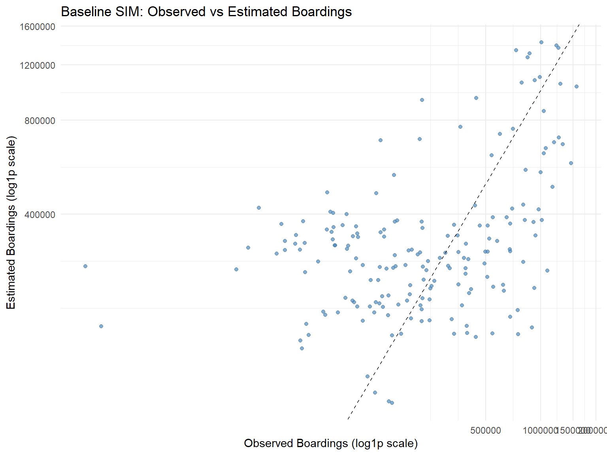
baseline_error_sf <- existing_station_sf %>%
select(station_name) %>%
left_join(
baseline_estimates,
by = c("station_name" = "destination_id")
)# Select stations to highlight
highlight_stations <- baseline_estimates %>%
arrange(desc(residual)) %>%
slice_head(n = 3) %>%
bind_rows(
baseline_estimates %>%
arrange(residual) %>%
slice_head(n = 3)
) %>%
pull(destination_id) %>%
unique()
# Extract highlighted stations
highlight_sf <- baseline_error_sf %>%
filter(station_name %in% highlight_stations)
# Prepare coordinates for labels
label_df <- cbind(
st_drop_geometry(highlight_sf),
as.data.frame(st_coordinates(highlight_sf))
)
# Plot spatial errors
ggplot() +
# All existing MRT/LRT stations
geom_sf(
data = baseline_error_sf,
aes(colour = residual),
size = 2
) +
# Highlight selected stations
geom_sf(
data = highlight_sf,
shape = 21,
fill = "white",
colour = "black",
size = 3.5,
stroke = 1
) +
# Add labels with automatic positioning
geom_label_repel(
data = label_df,
aes(
x = X,
y = Y,
label = station_name
),
size = 3.5,
box.padding = 0.5,
point.padding = 0.5,
min.segment.length = 0,
segment.colour = "grey40",
max.overlaps = Inf,
seed = 2026
) +
scale_colour_gradient2(
low = "#C26C5A",
mid = "grey90",
high = "#326EAA",
midpoint = 0,
name = "Residual\n(Observed - Estimated)"
) +
coord_sf(datum = NA) +
labs(
title = "Spatial Distribution of Baseline SIM Errors",
subtitle = "Positive residuals indicate underestimated demand",
caption = "Selected stations highlight major estimation discrepancies."
) +
theme_minimal()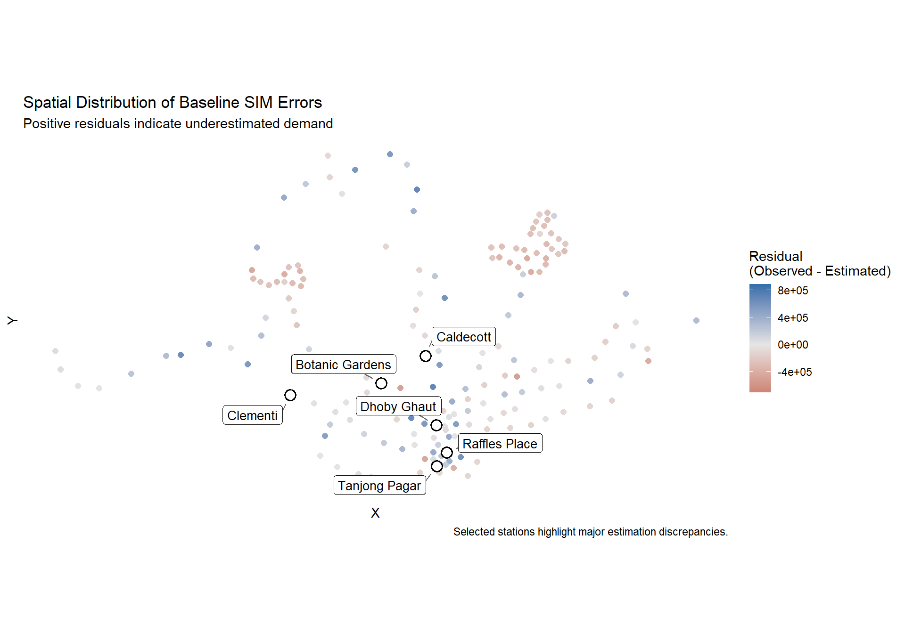
7.5.4 Baseline Estimation Evaluation
Demand Allocation and Model Fit
The calibrated SIM successfully allocates all 68,808,352 observed weekday boardings across the 184 existing MRT/LRT stations, confirming aggregate demand conservation by construction.
However, the observed-versus-estimated scatter plot reveals substantial station-level discrepancies, with many observations deviating considerably from the 1:1 reference line. This indicates that matching total demand does not necessarily translate into accurate station-level allocation.
Underestimation and Overestimation Patterns
The largest underestimations occur at Raffles Place (885,772), Clementi (822,470), and Tanjong Pagar (722,312). These stations represent different urban functions, suggesting that employment activity, feeder connectivity, and other demand characteristics may not be adequately captured by the current model.
Conversely, substantial overestimations are observed at Caldecott (703,139), Dhoby Ghaut (603,157), and Botanic Gardens (554,985). The overestimation of several interchange stations suggests that the number of active station codes may be an incomplete proxy for station attractiveness.
Spatial Patterns and Model Limitations
The spatial error map reveals geographically uneven estimation errors, indicating that model performance varies across the existing network.
A key limitation is the reliance on residential-origin demand to represent all station boardings, including return journeys and trips associated with non-residential activities. Furthermore, HDB building counts do not capture the full residential population, while Euclidean distance does not represent actual pedestrian accessibility.
Implications for Further Evaluation
Overall, the calibrated SIM provides a consistent probabilistic demand-allocation framework but exhibits substantial station-level estimation errors. Since observed boardings were also used for calibration, these findings represent an in-sample assessment rather than independent predictive validation.
Section 7.6 will quantify estimation accuracy and examine whether alternative calibrated parameters materially affect station-level allocations, informing the reliability of subsequent network-expansion scenarios.
7.6 Model Validation and Sensitivity
7.6.1 Baseline Estimation Accuracy
The calibrated SIM is evaluated by comparing estimated and observed station-level boardings. Mean Absolute Error (MAE), Root Mean Squared Error (RMSE), Weighted Absolute Percentage Error (WAPE), and Pearson correlation are used to assess estimation accuracy.
As the observed station boardings were used for calibration, these metrics represent in-sample model performance rather than independent predictive validation.
calculate_sim_metrics <- function(pred, obs, scenario) {
error <- obs - pred
tibble(
Scenario = scenario,
MAE = mean(abs(error)),
RMSE = sqrt(mean(error^2)),
WAPE_pct = 100 * sum(abs(error)) / sum(obs),
Pearson_r = cor(obs, pred),
Hellinger_objective = sum(
(
sqrt(pred / sum(pred)) -
sqrt(obs / sum(obs))
)^2
)
)
}
# Evaluate preferred calibrated model
preferred_metrics <- calculate_sim_metrics(
pred = baseline_estimates$estimated_boardings,
obs = baseline_estimates$observed_boardings,
scenario = "Preferred calibrated SIM"
)
kable(
preferred_metrics,
digits = 4,
caption = "Baseline SIM Estimation Accuracy"
)| Scenario | MAE | RMSE | WAPE_pct | Pearson_r | Hellinger_objective |
|---|---|---|---|---|---|
| Preferred calibrated SIM | 226834.5 | 291632.7 | 60.6577 | 0.5857 | 0.1508 |
7.6.2 Calibration Parameter Sensitivity
Two distinct parameter solutions were identified during model calibration. Although their objective values are similar, their distance-decay exponents differ substantially.
Both solutions are therefore evaluated using the same observed boarding data and performance metrics to determine whether the alternative parameter specification materially affects baseline station-level demand allocation.
# Identify successful solutions at the beta lower bound
boundary_idx <- which(
calibration_runs$Converged &
abs(calibration_runs$Fitted_beta - 0.1) < 0.001
)
# Select the boundary solution with the lowest objective
alt_idx <- boundary_idx[
which.min(calibration_runs$Objective[boundary_idx])
]
gamma_alt <- calibration_runs$Fitted_gamma[alt_idx]
beta_alt <- calibration_runs$Fitted_beta[alt_idx]
# Apply alternative parameters
alternative_full <- allocate_baseline(
gamma = gamma_alt,
beta = beta_alt,
return_probabilities = TRUE
)
alternative_estimates <- as.numeric(
alternative_full$estimated
)# Original benchmark
benchmark_estimates <- allocate_baseline(
gamma = 1,
beta = 2
)
# Compare all specifications
model_sensitivity <- bind_rows(
calculate_sim_metrics(
benchmark_estimates,
observed,
"Initial benchmark"
),
calculate_sim_metrics(
baseline_estimates$estimated_boardings,
observed,
"Preferred interior solution"
),
calculate_sim_metrics(
alternative_estimates,
observed,
"Alternative boundary solution"
)
)
kable(
model_sensitivity,
digits = 4,
caption = "SIM Calibration and Parameter Sensitivity Comparison"
)| Scenario | MAE | RMSE | WAPE_pct | Pearson_r | Hellinger_objective |
|---|---|---|---|---|---|
| Initial benchmark | 245416.3 | 338606.9 | 65.6266 | 0.4624 | 0.1984 |
| Preferred interior solution | 226834.5 | 291632.7 | 60.6577 | 0.5857 | 0.1508 |
| Alternative boundary solution | 232498.0 | 298027.8 | 62.1721 | 0.5503 | 0.1516 |
7.6.3 Station-Level Allocation Sensitivity
Station-level allocations from the preferred and alternative calibration solutions are compared to identify locations most sensitive to parameter assumptions.
Changes in estimated boardings are calculated for each station, while the largest absolute differences are visualised to illustrate how alternative attraction and distance-decay parameters affect the spatial distribution of demand.
station_sensitivity <- baseline_estimates %>%
select(
destination_id,
observed_boardings,
estimated_boardings
) %>%
rename(
preferred_estimate = estimated_boardings
) %>%
mutate(
alternative_estimate = alternative_estimates,
# Alternative minus Preferred
change_boardings =
alternative_estimate - preferred_estimate,
absolute_change = abs(change_boardings),
# Change as percentage points of total demand
change_share_pp =
100 * change_boardings / total_boardings
)
# Top 10 most sensitive stations
top_sensitive <- station_sensitivity %>%
arrange(desc(absolute_change)) %>%
slice_head(n = 10)
kable(
top_sensitive,
digits = 2,
caption = "Top 10 Stations Most Sensitive to Calibration Parameters"
)| destination_id | observed_boardings | preferred_estimate | alternative_estimate | change_boardings | absolute_change | change_share_pp |
|---|---|---|---|---|---|---|
| Sengkang | 1010255 | 1416936.3 | 872002.0 | -544934.3 | 544934.3 | -0.79 |
| Tampines | 1215942 | 1385884.8 | 853103.2 | -532781.6 | 532781.6 | -0.77 |
| Woodlands | 1247378 | 1362169.2 | 843765.6 | -518403.6 | 518403.6 | -0.75 |
| Choa Chu Kang | 847097 | 1268709.8 | 844984.4 | -423725.3 | 423725.3 | -0.62 |
| Marina Bay | 158323 | 532834.4 | 830283.4 | 297449.0 | 297449.0 | 0.43 |
| Outram Park | 870368 | 1307552.7 | 1600507.1 | 292954.3 | 292954.3 | 0.43 |
| Pioneer | 826804 | 553712.7 | 270681.6 | -283031.1 | 283031.1 | -0.41 |
| HarbourFront | 999878 | 544702.0 | 824799.6 | 280097.6 | 280097.6 | 0.41 |
| Dhoby Ghaut | 734503 | 1337659.5 | 1617557.6 | 279898.1 | 279898.1 | 0.41 |
| Raffles Place | 1467823 | 582050.6 | 835823.4 | 253772.9 | 253772.9 | 0.37 |
ggplot(
top_sensitive,
aes(
x = reorder(destination_id, change_boardings),
y = change_boardings,
fill = change_boardings > 0
)
) +
geom_col() +
coord_flip() +
scale_fill_manual(
values = c(
"TRUE" = "#4C78A8",
"FALSE" = "#C26C5A"
),
guide = "none"
) +
scale_y_continuous(
labels = label_comma()
) +
labs(
title = "Station-Level Sensitivity to SIM Parameters",
subtitle = "Alternative boundary solution minus preferred solution",
x = NULL,
y = "Change in Estimated Boardings"
) +
theme_minimal()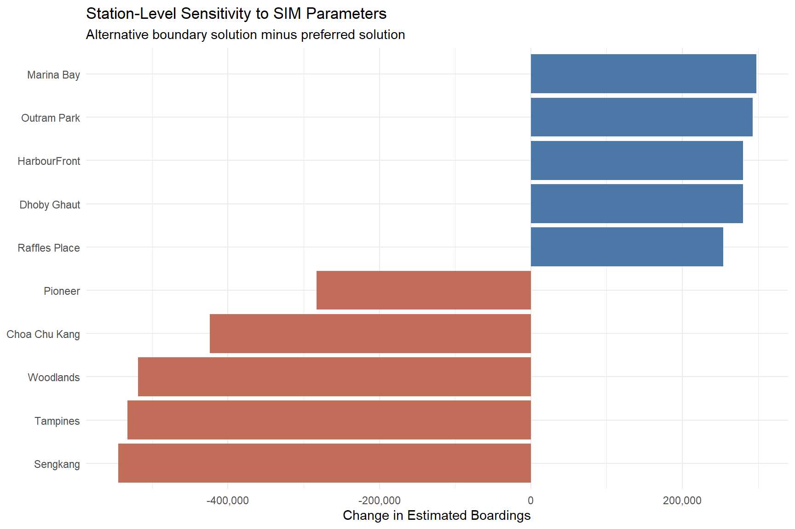
# Compare station-choice probabilities
preferred_prob <- baseline_full$probabilities
alternative_prob <- alternative_full$probabilities
# Total variation distance for each origin (0 to 1)
origin_choice_shift <- 0.5 * rowSums(
abs(preferred_prob - alternative_prob)
)
# Summary of origin-level sensitivity
origin_sensitivity_summary <- tibble(
Indicator = c(
"Median origin choice shift",
"HDB-weighted mean choice shift",
"Maximum origin choice shift"
),
Value = c(
median(origin_choice_shift),
weighted.mean(
origin_choice_shift,
w = origin_df$market_potential
),
max(origin_choice_shift)
)
)
kable(
origin_sensitivity_summary,
digits = 4,
caption = "Origin-Level Station Choice Sensitivity"
)| Indicator | Value |
|---|---|
| Median origin choice shift | 0.3020 |
| HDB-weighted mean choice shift | 0.3358 |
| Maximum origin choice shift | 0.5967 |
7.6.4 Overall Model Reliability and Limitations
Baseline Estimation Accuracy
The preferred calibrated SIM achieves an MAE of 226,835 boardings, RMSE of 291,633, WAPE of 60.66%, and Pearson correlation of 0.586.
Compared with the initial benchmark, calibration reduces WAPE from 65.63% to 60.66% and RMSE from 338,607 to 291,633. Although calibration improves the in-sample fit, the remaining errors indicate limited station-level estimation accuracy.
Parameter Sensitivity
The preferred interior solution (γ = 1.7456, β = 1.1258) performs slightly better than the alternative boundary solution (γ = 1.6025, β = 0.1000), with WAPE values of 60.66% and 62.17%, respectively.
Despite their similar calibration objectives (0.1508 versus 0.1516), the two solutions produce substantial differences in station-level demand allocation.
The largest changes occur at Sengkang (−544,934), Tampines (−532,782), and Woodlands (−518,404), while Marina Bay (+297,449) and Outram Park (+292,954) receive higher estimated allocations under the alternative solution.
Origin-Level Choice Sensitivity
The origin-level sensitivity analysis further reveals substantial differences in estimated station-choice probabilities. The median total variation distance is 0.3020, while the HDB-weighted mean reaches 0.3358.
These findings indicate that similar aggregate calibration performance does not necessarily imply stable origin-level choice probabilities or station-level demand estimates.
Model Reliability and Implications
Overall, the SIM provides a consistent probabilistic demand-allocation framework, but its reliability is constrained by substantial estimation errors and sensitivity to calibration parameters.
The model also relies on simplified representations of residential market potential, station attractiveness, and Euclidean distance. Furthermore, the accuracy results are based on in-sample assessment rather than independent validation.
Consequently, subsequent JRL/CRL network expansion results should be interpreted as scenario-based demand allocations rather than validated ridership forecasts.
The preferred solution will serve as the main specification for Section 8, while the alternative parameter solution will be retained as a sensitivity scenario to assess the robustness of future demand redistribution patterns.
7.7 Summary and Implications
The calibrated SIM provides three key findings:
Calibration: The calibrated model improves baseline estimation compared with the initial benchmark, although substantial station-level errors remain.
Parameter sensitivity: Similar calibration performance can produce considerably different station-level allocations and origin-level choice probabilities.
Model limitations: Simplified residential demand, station attractiveness, and distance measures limit the reliability of ridership estimates.
Overall, the SIM provides a useful framework for examining potential demand redistribution, rather than producing validated ridership forecasts.
Section 8 applies the calibrated model to the expanded JRL/CRL network, using the preferred parameters for the main scenario and the alternative parameters to assess sensitivity.
8 Future MRT Network Scenario Analysis
8.1 Scenario Design and Assumptions
Two network scenarios are examined:
Baseline Scenario: 184 existing MRT/LRT stations.
Expanded Scenario: 184 existing stations and 35 proposed JRL/CRL stations, including updated connectivity at affected existing interchanges.
The calibrated SIM parameters and total residential-origin demand are held constant across scenarios. This isolates the effects of network expansion on modelled station-level demand allocation.
The analysis represents a hypothetical expanded-network scenario rather than a time-specific ridership forecast. Future population growth, induced demand, and changes in travel behaviour are not modelled.
8.2 Expanded Network Demand Allocation
n_future_dest <- nrow(destination_df)future_dist_mat <- matrix(
interaction_expanded$distance_km,
nrow = nrow(origin_df),
ncol = n_future_dest,
byrow = TRUE
)
future_attr <- as.numeric(
destination_df$attraction_future
)
# Inspect attraction distribution
destination_df %>%
count(station_type, attraction_future) %>%
kable(
caption = "Future Network Station Attractiveness"
)| station_type | attraction_future | n |
|---|---|---|
| Existing | 1 | 148 |
| Existing | 2 | 30 |
| Existing | 3 | 6 |
| Proposed | 1 | 35 |
# Check connectivity changes at key existing stations
destination_baseline %>%
select(destination_id, attraction_baseline) %>%
left_join(
destination_df %>%
select(destination_id, attraction_future),
by = "destination_id"
) %>%
filter(
destination_id %in% c(
"Pasir Ris",
"Punggol",
"Hougang",
"Ang Mo Kio",
"Riviera"
)
) %>%
mutate(
attraction_change =
attraction_future - attraction_baseline
) %>%
kable(
caption = "Connectivity Changes at Selected Existing Stations"
)| destination_id | attraction_baseline | attraction_future | attraction_change |
|---|---|---|---|
| Ang Mo Kio | 1 | 2 | 1 |
| Hougang | 1 | 2 | 1 |
| Pasir Ris | 1 | 3 | 2 |
| Punggol | 2 | 3 | 1 |
| Riviera | 1 | 2 | 1 |
future_log_dist <- log(future_dist_mat)
future_log_attr <- log(future_attr)
allocate_expanded <- function(
gamma,
beta,
return_probabilities = FALSE
) {
# Calculate log utility
log_utility <- sweep(
-beta * future_log_dist,
2,
gamma * future_log_attr,
"+"
)
# Numerical stability
row_max <- apply(log_utility, 1, max)
exp_u <- exp(
sweep(log_utility, 1, row_max, "-")
)
# Origin-to-station choice probabilities
probabilities <- sweep(
exp_u,
1,
rowSums(exp_u),
"/"
)
# Allocate origin demand across stations
estimates <- as.numeric(
crossprod(origin_demand, probabilities)
)
if (return_probabilities) {
return(list(
probabilities = probabilities,
estimated = estimates
))
}
estimates
}future_preferred <- allocate_expanded(
gamma = gamma_hat,
beta = beta_hat,
return_probabilities = TRUE
)
# Construct expanded station-level results
expanded_estimates <- destination_df %>%
select(
destination_id,
station_type,
observed_boardings
) %>%
mutate(
expanded_estimate = as.numeric(
future_preferred$estimated
)
)scenario_summary <- tibble(
Group = c(
"Baseline: existing stations",
"Expanded: existing stations",
"Expanded: proposed stations",
"Expanded: all stations"
),
Stations = c(184, 184, 35, 219),
Modelled_boardings = c(
sum(baseline_estimates$estimated_boardings),
sum(expanded_estimates$expanded_estimate[
expanded_estimates$station_type == "Existing"
]),
sum(expanded_estimates$expanded_estimate[
expanded_estimates$station_type == "Proposed"
]),
sum(expanded_estimates$expanded_estimate)
)
) %>%
mutate(
Share_pct = 100 * Modelled_boardings /
total_boardings
)
kable(
scenario_summary,
digits = 2,
caption = "Baseline and Expanded Network Demand Allocation"
)| Group | Stations | Modelled_boardings | Share_pct |
|---|---|---|---|
| Baseline: existing stations | 184 | 68808352 | 100.00 |
| Expanded: existing stations | 184 | 61365625 | 89.18 |
| Expanded: proposed stations | 35 | 7442727 | 10.82 |
| Expanded: all stations | 219 | 68808352 | 100.00 |
8.3 Station-Level Ridership Comparison
Changes for existing stations are computed as expanded-network modelled allocation minus baseline modelled allocation, rather than expanded modelled allocation minus observed boardings. This prevents baseline fitting errors from being mistaken for expansion impacts.
Estimated demand at proposed JRL/CRL stations is examined to identify locations attracting the largest modelled residential-origin allocations.
Changes at existing stations are then calculated by comparing baseline and expanded-network estimates under the same calibrated parameters. This isolates modelled redistribution associated with the introduction of proposed stations and changes in network connectivity.
proposed_results <- expanded_estimates %>%
filter(station_type == "Proposed") %>%
arrange(desc(expanded_estimate))
kable(
proposed_results %>%
select(
destination_id,
expanded_estimate
) %>%
slice_head(n = 10),
digits = 0,
caption = "Top 10 Proposed Stations by Modelled Demand"
)| destination_id | expanded_estimate |
|---|---|
| Pasir Ris East | 338258 |
| Tengah Plantation | 334656 |
| Gek Poh | 312362 |
| Elias | 306668 |
| Teck Ghee | 300194 |
| Tampines North | 283030 |
| Serangoon North | 273200 |
| Jurong West | 269183 |
| Tengah Park | 268349 |
| Toh Guan | 260630 |
ggplot(
proposed_results %>% slice_head(n = 10),
aes(
x = reorder(destination_id, expanded_estimate),
y = expanded_estimate
)
) +
geom_col(fill = "#4472A6") +
coord_flip() +
scale_y_continuous(
labels = label_comma()
) +
labs(
title = "Modelled Demand at Proposed JRL/CRL Stations",
x = NULL,
y = "Estimated Boardings"
) +
theme_minimal()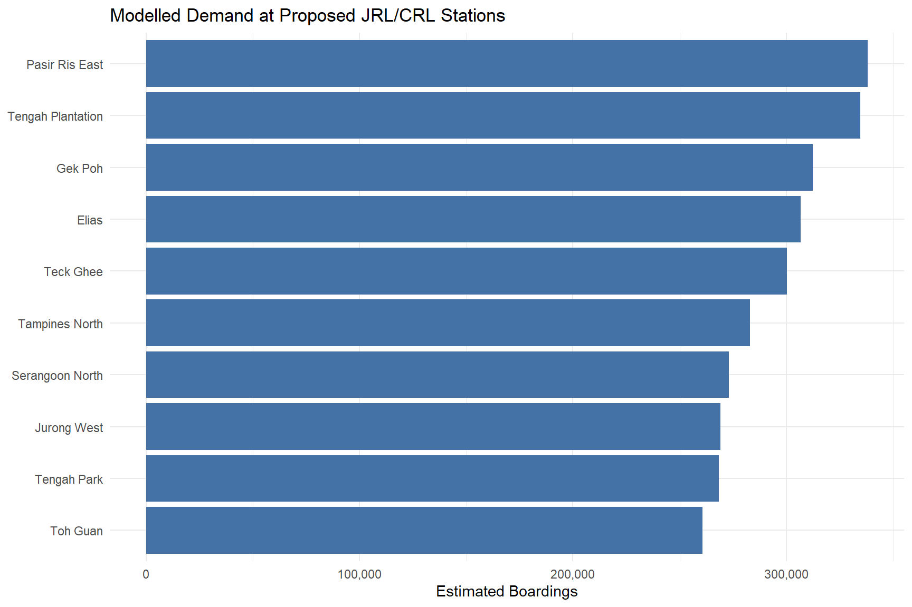
existing_change <- expanded_estimates %>%
filter(station_type == "Existing") %>%
left_join(
baseline_estimates %>%
select(
destination_id,
baseline_estimate = estimated_boardings
),
by = "destination_id"
) %>%
mutate(
change_boardings =
expanded_estimate - baseline_estimate,
change_pct =
100 * change_boardings / pmax(baseline_estimate, 1)
)# Largest decreases
top_decreases <- existing_change %>%
arrange(change_boardings) %>%
slice_head(n = 10)
# Largest increases
top_increases <- existing_change %>%
filter(change_boardings > 0) %>%
arrange(desc(change_boardings)) %>%
slice_head(n = 10)
kable(
top_decreases %>%
select(
destination_id,
baseline_estimate,
expanded_estimate,
change_boardings,
change_pct
),
digits = 2,
caption = "Existing Stations with the Largest Demand Reductions"
)| destination_id | baseline_estimate | expanded_estimate | change_boardings | change_pct |
|---|---|---|---|---|
| Tampines | 1385884.8 | 1055423.1 | -330461.7 | -23.84 |
| Dhoby Ghaut | 1337659.5 | 1064784.0 | -272875.5 | -20.40 |
| Bukit Panjang | 1071830.2 | 799787.1 | -272043.1 | -25.38 |
| Sengkang | 1416936.3 | 1145994.8 | -270941.5 | -19.12 |
| Outram Park | 1307552.7 | 1054464.3 | -253088.5 | -19.36 |
| Woodlands | 1362169.2 | 1117130.2 | -245039.0 | -17.99 |
| Bishan | 1054938.9 | 835612.7 | -219326.2 | -20.79 |
| Pioneer | 553712.7 | 337486.6 | -216226.1 | -39.05 |
| Serangoon | 1046241.3 | 833918.4 | -212322.9 | -20.29 |
| Caldecott | 928324.6 | 741970.8 | -186353.8 | -20.07 |
kable(
top_increases %>%
select(
destination_id,
baseline_estimate,
expanded_estimate,
change_boardings,
change_pct
),
digits = 2,
caption = "Existing Stations with Increased Modelled Demand"
)| destination_id | baseline_estimate | expanded_estimate | change_boardings | change_pct |
|---|---|---|---|---|
| Pasir Ris | 417098.6 | 1926709.4 | 1509610.8 | 361.93 |
| Punggol | 1097542.2 | 1748604.5 | 651062.2 | 59.32 |
| Hougang | 373377.2 | 975847.8 | 602470.6 | 161.36 |
| Ang Mo Kio | 342118.4 | 880761.8 | 538643.4 | 157.44 |
| Riviera | 327979.7 | 848687.7 | 520708.0 | 158.76 |
| Choa Chu Kang | 1268709.8 | 1784870.1 | 516160.4 | 40.68 |
| Bright Hill | 295458.2 | 755308.2 | 459850.0 | 155.64 |
| Boon Lay | 382543.3 | 753016.0 | 370472.7 | 96.84 |
| Clementi | 263502.3 | 622912.1 | 359409.8 | 136.40 |
| Jurong East | 1024123.4 | 1367364.8 | 343241.4 | 33.52 |
existing_change_sf <- existing_station_sf %>%
select(station_name) %>%
left_join(
existing_change %>%
select(
destination_id,
change_boardings
),
by = c("station_name" = "destination_id")
)ggplot() +
geom_sf(
data = existing_change_sf,
aes(colour = change_boardings),
size = 2
) +
geom_sf(
data = future_station_sf,
shape = 17,
colour = "black",
size = 1.8
) +
scale_colour_gradient2(
low = "#C26C5A",
mid = "grey90",
high = "#326EAA",
midpoint = 0,
labels = label_comma(),
name = "Change in\nModelled Boardings"
) +
coord_sf(datum = NA) +
labs(
title = "Existing Station Demand Redistribution",
subtitle = "Expanded network minus baseline",
caption = "Triangles indicate proposed JRL/CRL stations."
) +
theme_minimal()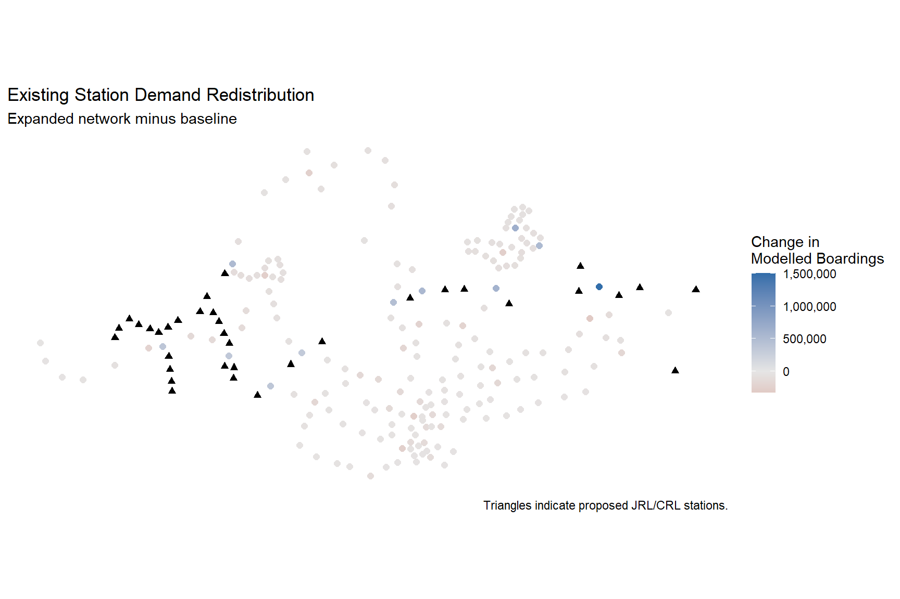
8.4 Future Scenario Sensitivity
The expanded-network scenario is evaluated under both calibrated parameter solutions to assess the robustness of modelled demand redistribution.
For each parameter specification, changes are calculated relative to its corresponding baseline allocation. Differences between the resulting network impacts are then examined to assess sensitivity to station-attractiveness and distance-decay assumptions.
future_alternative <- allocate_expanded(
gamma = gamma_alt,
beta = beta_alt,
return_probabilities = TRUE
)
future_alt_estimates <- as.numeric(
future_alternative$estimated
)proposed_idx <- destination_df$station_type == "Proposed"
future_sensitivity_summary <- tibble(
Parameter_Set = c(
"Preferred interior",
"Alternative boundary"
),
Proposed_Allocation = c(
sum(future_preferred$estimated[proposed_idx]),
sum(future_alt_estimates[proposed_idx])
)
) %>%
mutate(
Proposed_Share_pct =
100 * Proposed_Allocation / total_boardings
)
kable(
future_sensitivity_summary,
digits = 2,
caption = "Future Network Allocation Sensitivity"
)| Parameter_Set | Proposed_Allocation | Proposed_Share_pct |
|---|---|---|
| Preferred interior | 7442727 | 10.82 |
| Alternative boundary | 7688107 | 11.17 |
existing_impact_sensitivity <- tibble(
destination_id = destination_baseline$destination_id,
preferred_change =
future_preferred$estimated[1:n_dest] -
baseline_estimates$estimated_boardings,
alternative_change =
future_alt_estimates[1:n_dest] -
alternative_estimates
) %>%
mutate(
impact_difference =
alternative_change - preferred_change,
absolute_difference =
abs(impact_difference)
)
kable(
existing_impact_sensitivity %>%
arrange(desc(absolute_difference)) %>%
slice_head(n = 10),
digits = 0,
caption = "Existing Stations Most Sensitive to Future Scenario Parameters"
)| destination_id | preferred_change | alternative_change | impact_difference | absolute_difference |
|---|---|---|---|---|
| Pasir Ris | 1509611 | 1019307 | -490304 | 490304 |
| Punggol | 651062 | 456787 | -194276 | 194276 |
| Hougang | 602471 | 410000 | -192470 | 192470 |
| Pioneer | -216226 | -54535 | 161691 | 161691 |
| Tampines | -330462 | -171337 | 159125 | 159125 |
| Ang Mo Kio | 538643 | 408462 | -130182 | 130182 |
| Riviera | 520708 | 403824 | -116884 | 116884 |
| Jurong East | 343241 | 444235 | 100993 | 100993 |
| Bukit Panjang | -272043 | -171279 | 100764 | 100764 |
| Sengkang | -270941 | -175121 | 95821 | 95821 |
8.5 Evaluation and Implications
Expanded Network Demand Allocation
Under the preferred calibrated SIM, the 35 proposed JRL/CRL stations attract approximately 7.44 million modelled boardings, representing 10.82% of total demand.
Pasir Ris East (338,258), Tengah Plantation (334,656), and Gek Poh (312,362) receive the highest estimated allocations among proposed stations.
As total demand remains fixed, these allocations represent redistribution rather than additional passenger trips.
Existing Station Demand Redistribution
Network expansion produces both increases and decreases in estimated demand at existing stations.
Pasir Ris records the largest increase (+1.51 million; +361.93%), followed by Punggol (+651,062) and Hougang (+602,471). Conversely, Tampines (−330,462), Dhoby Ghaut (−272,876), and Bukit Panjang (−272,043) experience the largest reductions.
The additional connectivity assessment confirms that these large increases coincide with changes in the station-attractiveness proxy. Notably, Pasir Ris increases from an attractiveness value of 1 to 3, while Hougang, Ang Mo Kio, and Riviera increase from 1 to 2.
These findings suggest that modelled redistribution is influenced by both competition from proposed stations and changes in the attractiveness assigned to existing stations.
Parameter Sensitivity
The proposed stations receive 10.82% of total modelled demand under the preferred parameters, compared with 11.17% under the alternative parameters.
Although the aggregate allocations are similar, individual station impacts remain sensitive to parameter selection. For example, the estimated demand increase at Pasir Ris differs by approximately 490,304 boardings between the two solutions.
This highlights uncertainty in station-level redistribution despite relatively stable network-level outcomes.
Model Limitations and Planning Implications
The substantial increases at selected existing stations highlight the model’s sensitivity to connectivity assumptions. In particular, the attractiveness proxy is based on station-code counts rather than comprehensive network accessibility, while all proposed stations are assigned an attractiveness value of one.
Furthermore, the model assumes fixed residential demand and Euclidean distance, without accounting for future population growth, induced travel, or changing land use.
Given the baseline estimation error (WAPE = 60.66%) and calibration sensitivity, the results should be interpreted as scenario-based demand allocations rather than validated future ridership forecasts.
Nevertheless, the analysis provides useful insights into potential station competition and network redistribution. Section 9 further examines these impacts through changes in residential-origin station choice and market areas.
9 Ridership Redistribution and Market Area Assessment
9.1 Market Area Definition
Station market areas are examined using the origin-level choice probabilities estimated by the calibrated SIM.
Each HDB origin is assigned to its most preferred station based on the highest modelled choice probability. Changes in these dominant station assignments are used to identify potential market-area shifts between the baseline and expanded networks.
In addition, the combined probability of selecting proposed stations is examined to capture redistribution that may not result in a change of the dominant station.
These represent modelled residential market areas rather than observed passenger catchments or actual walking accessibility.
9.2 Residential Origin Station Choice Changes
# Extract station choice probability matrices
p_baseline <- baseline_full$probabilities
p_expanded <- future_preferred$probabilities
n_origins <- nrow(origin_df)
# Validate dimensions
# Identify station with highest probability for each origin
baseline_idx <- max.col(
p_baseline,
ties.method = "first"
)
expanded_idx <- max.col(
p_expanded,
ties.method = "first"
)
# Identify proposed stations
proposed_idx <- destination_df$station_type == "Proposed"
# Construct origin-level market area comparison
origin_market <- origin_df %>%
mutate(
baseline_station =
destination_baseline$destination_id[baseline_idx],
expanded_station =
destination_df$destination_id[expanded_idx],
expanded_type =
destination_df$station_type[expanded_idx],
baseline_dominant_prob =
p_baseline[cbind(seq_len(n_origins), baseline_idx)],
expanded_dominant_prob =
p_expanded[cbind(seq_len(n_origins), expanded_idx)],
proposed_choice_prob =
rowSums(p_expanded[, proposed_idx, drop = FALSE]),
transition = case_when(
expanded_type == "Proposed" ~
"Shifted to proposed",
baseline_station != expanded_station ~
"Shifted to other existing",
TRUE ~ "Unchanged"
)
)market_transition_summary <- origin_market %>%
group_by(transition) %>%
summarise(
Origin_grids = n(),
HDB_buildings = sum(market_potential),
.groups = "drop"
) %>%
mutate(
HDB_share_pct =
100 * HDB_buildings / sum(HDB_buildings)
)
kable(
market_transition_summary,
digits = 2,
caption = "Changes in Dominant Station Choice"
)| transition | Origin_grids | HDB_buildings | HDB_share_pct |
|---|---|---|---|
| Shifted to other existing | 52 | 2264 | 16.76 |
| Shifted to proposed | 12 | 958 | 7.09 |
| Unchanged | 179 | 10285 | 76.15 |
probability_summary <- tibble(
Indicator = c(
"Mean proposed-station choice probability",
"HDB-weighted proposed-station choice probability",
"Median dominant choice probability"
),
Value = c(
mean(origin_market$proposed_choice_prob),
weighted.mean(
origin_market$proposed_choice_prob,
origin_market$market_potential
),
median(origin_market$expanded_dominant_prob)
)
)
kable(
probability_summary,
digits = 4,
caption = "Residential Origin Choice Probability Summary"
)| Indicator | Value |
|---|---|
| Mean proposed-station choice probability | 0.1040 |
| HDB-weighted proposed-station choice probability | 0.1082 |
| Median dominant choice probability | 0.0911 |
9.3 Existing Station Market Area Changes
Changes in dominant station assignments are aggregated to the station level to assess how the residential market areas of existing stations may change following network expansion.
Market areas are measured using the number of assigned HDB origin grids and their associated HDB building counts. This provides a spatial perspective on station competition, complementing the ridership allocation analysis in Section 8.
# Baseline dominant market areas
market_before <- origin_market %>%
group_by(baseline_station) %>%
summarise(
baseline_grids = n(),
baseline_hdb = sum(market_potential),
.groups = "drop"
) %>%
rename(destination_id = baseline_station)
# Expanded network dominant market areas
market_after <- origin_market %>%
filter(expanded_type == "Existing") %>%
group_by(expanded_station) %>%
summarise(
expanded_grids = n(),
expanded_hdb = sum(market_potential),
.groups = "drop"
) %>%
rename(destination_id = expanded_station)
# Compare the 184 existing stations
existing_market_change <- destination_baseline %>%
select(destination_id) %>%
left_join(market_before, by = "destination_id") %>%
left_join(market_after, by = "destination_id") %>%
mutate(
across(
c(
baseline_grids, baseline_hdb,
expanded_grids, expanded_hdb
),
~ replace_na(.x, 0)
),
grid_change = expanded_grids - baseline_grids,
hdb_change = expanded_hdb - baseline_hdb
)# Stations losing the most HDB-dominant market area
top_market_losses <- existing_market_change %>%
arrange(hdb_change) %>%
slice_head(n = 10)
kable(
top_market_losses %>%
select(
destination_id,
baseline_grids,
expanded_grids,
baseline_hdb,
expanded_hdb,
hdb_change
),
digits = 0,
caption = "Existing Stations with the Largest Market Area Losses"
)| destination_id | baseline_grids | expanded_grids | baseline_hdb | expanded_hdb | hdb_change |
|---|---|---|---|---|---|
| Tampines | 18 | 7 | 1469 | 664 | -805 |
| Sengkang | 10 | 3 | 593 | 314 | -279 |
| Pioneer | 4 | 1 | 390 | 158 | -232 |
| Lakeside | 3 | 0 | 191 | 0 | -191 |
| Bishan | 8 | 5 | 386 | 244 | -142 |
| Tampines East | 1 | 0 | 122 | 0 | -122 |
| Buona Vista | 8 | 5 | 216 | 110 | -106 |
| Mayflower | 2 | 0 | 104 | 0 | -104 |
| Yishun | 6 | 4 | 414 | 314 | -100 |
| Bukit Batok | 1 | 0 | 96 | 0 | -96 |
# Stations gaining dominant market area
top_market_gains <- existing_market_change %>%
filter(hdb_change > 0) %>%
arrange(desc(hdb_change)) %>%
slice_head(n = 10)
kable(
top_market_gains,
digits = 0,
caption = "Existing Stations Gaining Dominant Residential Market Area"
)| destination_id | baseline_grids | baseline_hdb | expanded_grids | expanded_hdb | grid_change | hdb_change |
|---|---|---|---|---|---|---|
| Pasir Ris | 1 | 67 | 11 | 691 | 10 | 624 |
| Punggol | 5 | 380 | 17 | 810 | 12 | 430 |
| Hougang | 3 | 306 | 8 | 501 | 5 | 195 |
| Choa Chu Kang | 11 | 622 | 14 | 790 | 3 | 168 |
| Ang Mo Kio | 2 | 169 | 5 | 296 | 3 | 127 |
| Riviera | 0 | 0 | 3 | 123 | 3 | 123 |
| Clementi | 3 | 150 | 6 | 256 | 3 | 106 |
| Boon Lay | 2 | 158 | 6 | 261 | 4 | 103 |
| Bright Hill | 1 | 33 | 2 | 68 | 1 | 35 |
| King Albert Park | 0 | 0 | 3 | 22 | 3 | 22 |
9.4 Spatial Market Area Visualisation
A dominant station is simply the alternative with the highest modelled probability, not necessarily a majority choice. The accompanying combined proposed-station probability map retains information lost when each grid is assigned to only one station.
# Join market area results to 1 km grid polygons
origin_market_sf <- origin_grid_sf %>%
select(origin_id) %>%
left_join(
origin_market,
by = "origin_id"
)ggplot() +
# HDB grid market-area changes
geom_sf(
data = origin_market_sf,
aes(fill = transition),
colour = "white",
linewidth = 0.15
) +
# Existing stations
geom_sf(
data = existing_station_sf,
colour = "grey45",
size = 0.45,
alpha = 0.6
) +
# Proposed JRL/CRL stations
geom_sf(
data = future_station_sf,
shape = 17,
colour = "black",
size = 1.5
) +
scale_fill_manual(
values = c(
"Unchanged" = "#D9D9D9",
"Shifted to other existing" = "#6A9FC7",
"Shifted to proposed" = "#E6A057"
),
name = "Station Choice"
) +
coord_sf(datum = NA) +
labs(
title = "Residential Market Area Changes",
subtitle = "Dominant station choice: baseline vs expanded",
caption = "Black triangles indicate proposed JRL/CRL stations."
) +
theme_minimal()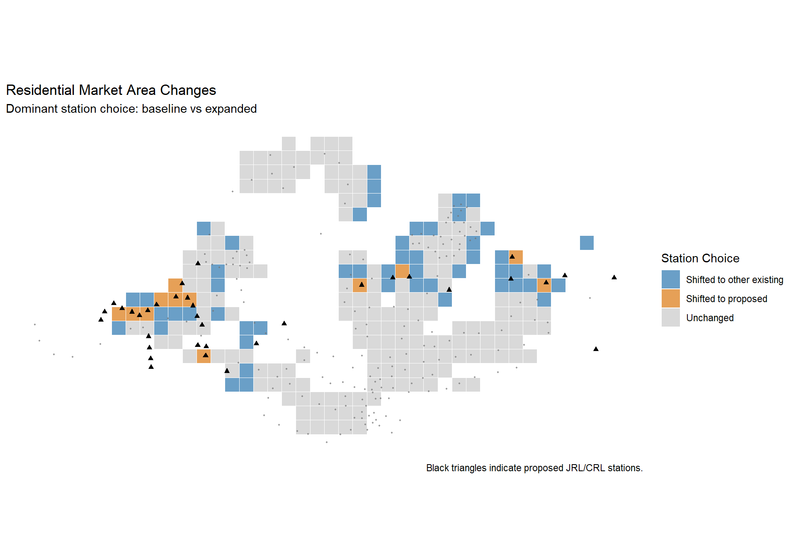
ggplot() +
geom_sf(
data = origin_market_sf,
aes(fill = proposed_choice_prob),
colour = "white",
linewidth = 0.15
) +
geom_sf(
data = future_station_sf,
shape = 17,
colour = "black",
size = 1.5
) +
scale_fill_viridis_c(
labels = label_percent(accuracy = 1),
limits = c(0, 1),
name = "Proposed Station\nChoice Probability"
) +
coord_sf(datum = NA) +
labs(
title = "Potential Market Share of Proposed Stations",
subtitle = "Combined JRL/CRL choice probability by HDB origin",
caption = "Probabilities are model-based, not observed station choices."
) +
theme_minimal()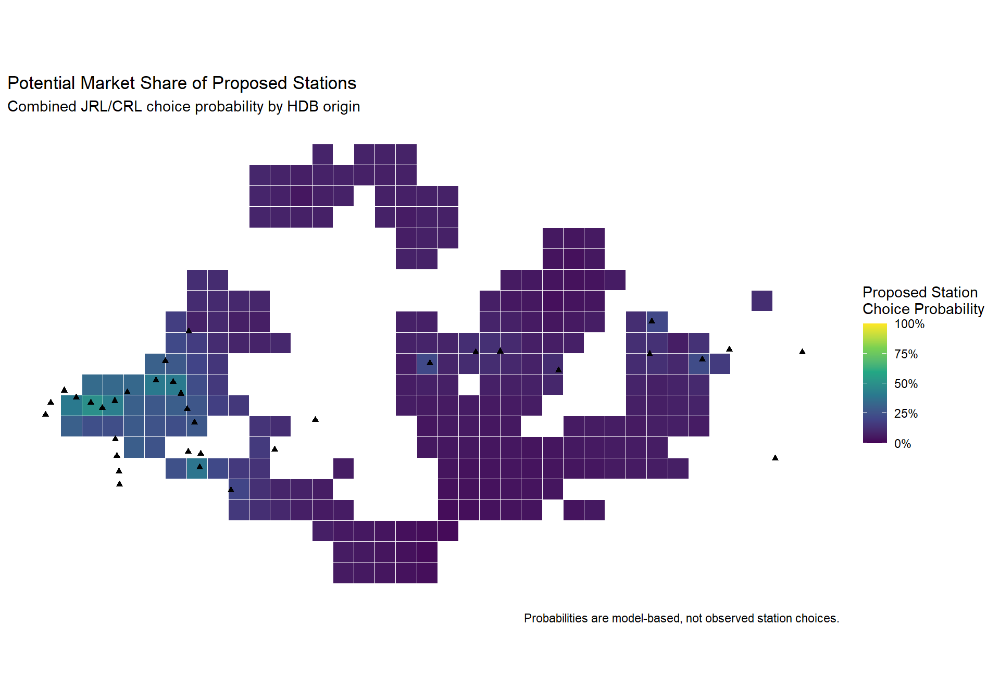
9.5 Accessibility and Parameter Sensitivity
9.5.1 800 m Residential Accessibility
An additional distance-based assessment examines changes in residential rail accessibility following network expansion.
The proportion of HDB buildings located in origin grids whose centroids are within 800 m of the nearest station is compared across scenarios. Euclidean distance is used as an accessibility proxy rather than actual pedestrian walking distance.
# Calculate nearest station distance in metres
get_nearest_distance <- function(stations) {
distance_matrix <- st_distance(
origin_sf,
stations
)
distance_numeric <- matrix(
as.numeric(distance_matrix),
nrow = nrow(origin_sf)
)
apply(distance_numeric, 1, min)
}
# Baseline and expanded network
nearest_baseline_m <- get_nearest_distance(
existing_station_sf
)
nearest_expanded_m <- get_nearest_distance(
expanded_station_sf
)
# Calculate HDB-weighted coverage
hdb_weights <- origin_df$market_potential
accessibility_summary <- tibble(
Scenario = c("Baseline", "Expanded"),
HDB_within_800m = c(
sum(hdb_weights[nearest_baseline_m <= 800]),
sum(hdb_weights[nearest_expanded_m <= 800])
),
Weighted_mean_distance_m = c(
weighted.mean(nearest_baseline_m, hdb_weights),
weighted.mean(nearest_expanded_m, hdb_weights)
)
) %>%
mutate(
Coverage_pct =
100 * HDB_within_800m / sum(hdb_weights)
)
kable(
accessibility_summary,
digits = 2,
caption = "Residential Accessibility Before and After Expansion"
)| Scenario | HDB_within_800m | Weighted_mean_distance_m | Coverage_pct |
|---|---|---|---|
| Baseline | 9496 | 674.22 | 70.30 |
| Expanded | 11057 | 546.53 | 81.86 |
9.5.2 Parameter Sensitivity
# Dominant stations under alternative parameters
alt_baseline_idx <- max.col(
alternative_full$probabilities,
ties.method = "first"
)
alt_expanded_idx <- max.col(
future_alternative$probabilities,
ties.method = "first"
)
# Compare alternative baseline and expanded assignments
alt_changed <-
destination_baseline$destination_id[alt_baseline_idx] !=
destination_df$destination_id[alt_expanded_idx]
alt_to_proposed <-
destination_df$station_type[alt_expanded_idx] == "Proposed"
# Main parameter solution
main_changed <- origin_market$transition != "Unchanged"
main_to_proposed <- origin_market$expanded_type == "Proposed"
market_sensitivity <- tibble(
Parameter_Set = c(
"Preferred interior",
"Alternative boundary"
),
Changed_Grids = c(
sum(main_changed),
sum(alt_changed)
),
Proposed_Dominant_Grids = c(
sum(main_to_proposed),
sum(alt_to_proposed)
),
Proposed_Dominant_HDB = c(
sum(hdb_weights[main_to_proposed]),
sum(hdb_weights[alt_to_proposed])
)
)
kable(
market_sensitivity,
digits = 0,
caption = "Market Area Sensitivity to Calibration Parameters"
)| Parameter_Set | Changed_Grids | Proposed_Dominant_Grids | Proposed_Dominant_HDB |
|---|---|---|---|
| Preferred interior | 64 | 12 | 958 |
| Alternative boundary | 178 | 0 | 0 |
9.6 Evaluation and Planning Implications
Residential Market Area Redistribution
Under the preferred SIM parameters, 64 of 243 HDB origin grids (26.3%) experience changes in dominant station choice. Among these, 12 grids containing 958 HDB buildings shift towards proposed JRL/CRL stations.
Tampines records the largest loss of dominant residential market area (−805 HDB buildings), while Pasir Ris (+624) and Punggol (+430) experience the largest gains, consistent with the connectivity changes identified in Section 8.
Residential Accessibility Improvement
The expanded network increases HDB-weighted 800 m station coverage from 70.30% to 81.86%, representing an improvement of 11.56 percentage points. The weighted mean distance to the nearest station also decreases from 674.22 m to 546.53 m.
These results suggest improved geographical proximity to rail stations, although accessibility is measured using grid centroids and Euclidean distance rather than actual pedestrian routes.
Parameter Sensitivity and Market Area Uncertainty
Market-area assignments are highly sensitive to calibration parameters. The preferred solution identifies 12 grids shifting towards proposed stations, whereas the alternative solution identifies none, despite both scenarios allocating demand to the proposed network.
Furthermore, the median dominant station-choice probability is only 9.11%, indicating that demand is distributed across multiple competing stations. Therefore, dominant market-area boundaries should be interpreted cautiously.
Overall Planning Implications
The results suggest that JRL/CRL expansion could improve residential rail accessibility and reshape competition between existing and proposed stations.
However, substantial baseline estimation errors and parameter sensitivity limit the reliability of precise market-area assignments.
Consequently, the findings are most useful for identifying potential accessibility improvements and indicative redistribution patterns, rather than predicting actual passenger choices or future station catchments.
10 Discussion, Limitations and Conclusion
10.1 Key Research Findings
The analysis addresses four research questions concerning existing MRT/LRT ridership, spatial interaction modelling, future station demand, and residential market-area redistribution.
Spatial Determinants of Existing Ridership
The OLS analysis identifies significant positive associations between ridership, residential concentration, station connectivity, and station spacing. GWR improves the model’s explanatory performance (Adjusted R²: 0.332 to 0.469) and substantially reduces residual spatial autocorrelation. These findings suggest that ridership relationships vary geographically, although some local coefficient estimates remain affected by multicollinearity.
Baseline Ridership Modelling
The calibrated SIM improves estimation compared with the initial benchmark. However, substantial station-level errors remain (WAPE = 60.66%), and alternative parameter solutions produce considerably different demand allocations. This highlights the limitations of simplified residential demand and station-attractiveness indicators.
Future Station Demand
Under the expanded-network scenario, the 35 proposed JRL/CRL stations receive approximately 7.44 million modelled boardings (10.82% of total demand). Existing stations experience both gains and losses, partly reflecting changes in their assigned connectivity-based attractiveness.
Market Area and Demand Redistribution
Under the preferred parameters, 64 of 243 residential grids change their dominant station assignment, including 12 grids shifting towards proposed stations. The expanded network also increases HDB-weighted 800 m coverage from 70.30% to 81.86%. However, dominant station assignments are highly sensitive to calibration parameters.
10.2 Planning Implications
The findings offer three practical implications for preliminary rail-network planning:
Residential accessibility: Identify residential areas where proposed stations may improve geographical proximity to rail services.
Network integration: Highlight existing stations where changes in connectivity and station competition may substantially affect modelled demand allocation.
Further planning priorities: Identify locations where additional investigation into feeder transport, pedestrian connectivity, and station capacity may be valuable.
These findings support preliminary spatial screening rather than definitive investment prioritisation or ridership forecasting.
10.3 Limitations and Future Research
Several limitations should be acknowledged.
Residential demand representation: HDB building counts approximate residential market potential but exclude private housing, actual population differences, and non-residential trip origins. The model also applies residential-origin demand assumptions to observed boardings that include return journeys and other travel purposes.
Station attractiveness and spatial separation: Attraction is represented using station-code counts, while Euclidean distance does not account for actual pedestrian routes, travel time, or service accessibility. These simplifications may affect estimated station preferences and demand redistribution.
Model calibration and uncertainty: The SIM is calibrated against aggregate station boardings rather than observed residential origin-to-station choices. Its substantial baseline errors and sensitivity to alternative parameter solutions limit predictive reliability.
Future scenario assumptions: The expanded-network scenario holds total demand constant and does not incorporate population growth, induced travel, future land-use changes, or phased station openings.
Future research could incorporate population and employment data, commercial land-use indicators, pedestrian network distances, and observed residential travel behaviour to improve model calibration and validation.
10.4 Conclusion
This study combines exploratory spatial regression and probabilistic spatial interaction modelling to examine Singapore’s existing MRT/LRT ridership and potential impacts of JRL/CRL expansion.
The results indicate that rail-network expansion could improve residential accessibility and reshape modelled station demand and market areas. However, substantial estimation uncertainty limits the interpretation of these outcomes as future ridership forecasts.
Overall, the study provides a reproducible spatial analytical framework for exploring network-expansion scenarios and identifying areas requiring further transport planning assessment.
11 Executive Summary
12 References
Housing & Development Board. (2026). HDB Existing Building [Dataset]. data.gov.sg. https://data.gov.sg/datasets/d_16b157c52ed637edd6ba1232e026258d/view
Land Transport Authority. (n.d.). LTA DataMall: Static data. https://datamall.lta.gov.sg/content/datamall/en/static-data.html
Land Transport Authority. (n.d.). LTA DataMall: Dynamic data. https://datamall.lta.gov.sg/content/datamall/en/dynamic-data.html
Land Transport Authority. (n.d.). Jurong Region Line. https://www.lta.gov.sg/content/ltagov/en/upcoming_projects/rail_expansion/jurong_region_line.html
Land Transport Authority. (n.d.). Cross Island Line. https://www.lta.gov.sg/content/ltagov/en/upcoming_projects/rail_expansion/cross_island_line.html
Urban Redevelopment Authority. (2026). Master Plan 2025 Rail Station Layer [Dataset]. data.gov.sg. https://data.gov.sg/datasets/d_2c06c9fe8ae724b5d33efa1f203e2c38/view
elliotwutingfeng. (n.d.). Singapore Train Station Coordinates [GitHub repository]. https://github.com/elliotwutingfeng/singapore_train_station_coordinates
Huff, D. L. (1964). Defining and estimating a trading area. Journal of Marketing, 28(3), 34–38. https://doi.org/10.1177/002224296402800307
Gollini, I., Lu, B., Charlton, M., Brunsdon, C., & Harris, P. (2015). GWmodel: An R package for exploring spatial heterogeneity using geographically weighted models. Journal of Statistical Software, 63(17), 1–50. https://doi.org/10.18637/jss.v063.i17
Bivand, R., & Wong, D. W. S. (2018). Comparing implementations of global and local indicators of spatial association. TEST, 27(3), 716–748. https://doi.org/10.1007/s11749-018-0599-x
Pebesma, E. (2018). Simple features for R: Standardized support for spatial vector data. The R Journal, 10(1), 439–446. https://doi.org/10.32614/RJ-2018-009
Zeileis, A. (2004). Econometric computing with HC and HAC covariance matrix estimators. Journal of Statistical Software, 11(10), 1–17. https://doi.org/10.18637/jss.v011.i10
R Core Team. (n.d.). optim: General-purpose optimization [R documentation]. https://stat.ethz.ch/R-manual/R-devel/library/stats/html/optim.html
ISSS626 Geospatial Analytics and Applications. (2026). Course lessons and hands-on exercises. https://isss626-ay2026-27aug.netlify.app/
13 AI Tool Use Declaration
Generative AI tools, primarily OpenAI ChatGPT, were used to support research planning, report structuring, academic writing, R programming, debugging, and interpretation of analytical results.
General Analytical Assistance
The core geospatial concepts, including spatial autocorrelation, Geographically Weighted Regression (GWR), and Spatial Interaction Modelling (SIM), were informed by the course materials.
AI assistance was used to adapt these methods to the Singapore MRT/LRT network expansion study, develop R and Quarto implementations, and improve the presentation and interpretation of results.
Additional AI-Assisted Techniques
AI assistance was also used to explore and implement supplementary techniques beyond the standard course examples, particularly:
- Regression diagnostics: HC3 robust standard errors, Cook’s Distance sensitivity analysis, and local multicollinearity assessment.
- Spatial diagnostics: K-nearest-neighbour sensitivity analysis and permutation-based Moran’s I evaluation.
- SIM calibration: Hellinger-type calibration objective, multi-start bounded optimisation, and parameter boundary diagnostics.
- Model sensitivity: Total Variation Distance for origin-level choice probabilities and comparisons between alternative calibrated parameter solutions.
- Scenario analysis: Custom demand-allocation functions, station-level redistribution comparisons, market-area analysis, and supporting visualisations.
Verification and Responsibility
AI-assisted code and methodological suggestions were reviewed and adapted for the project. The analytical code was executed in RStudio, with model outputs, diagnostic results, and sensitivity findings examined during the analysis.
The limitations of the models, including baseline estimation errors and parameter uncertainty, are explicitly acknowledged in the report.
The author remains responsible for the final methodological decisions, analytical interpretations, conclusions, and academic integrity of the submission.